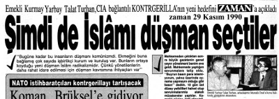
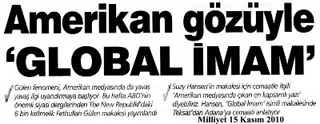
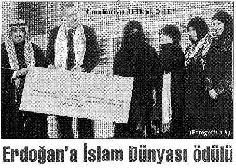
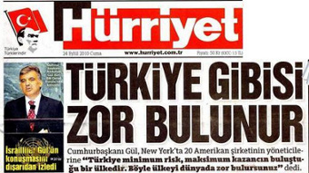
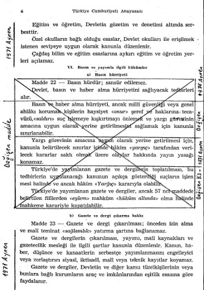
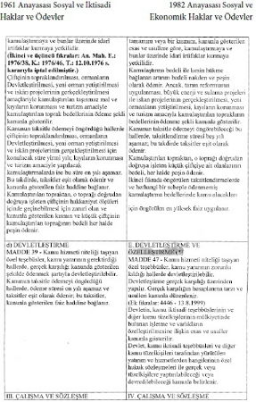

İşbirlikçiler ülkemizi bölmek isteyen emperyalist ülkelerce örgütlenmekte ve beslenmektedir.(16) Kutsal dinimiz emperyalistler tarafından kullanılmak istenmekte ve uydu bir
“Osmanlı
İmparatorluğu”(17)
modeline
dönülmek
amaçlanmaktadır. Türk Silahlı Kuvvetleri emperyalistlerin amaçlarına hizmet edinceye kadar “psikolojik savaş”ın hedefinde tutulmak, hatta etkisizleştirilip dağıtılmak istenmektedir. Bu niyet açıkça görülmektedir. (18) Küreselleşmeciler dünyayı köy gibi görüyorlar. Uzayın sonsuzluğu düşünüldüğünde bu tanımlama haklı olabilir.
İktidar “yeni Türkiye”den söz ediyor. İlginçtir CIA ajanı Graham E. Fuller’in 2008 yılında yayımlanan kitabının adı da Yeni Türkiye Cumhuriyeti. Fuller’in önerdiği bir model mi sahneye konuluyor? (19)
İslam’ı ehlileştirip “ılımlı İslam”a dönüştürme dayatmasının anlamı nedir?
“Dinler arası diyaloğ”un emperyalizmin planı olduğunu algılayamazsak “ulus devlet”imiz yok olabilir.
Küreselleşmeciler “tel ülke”, “tek dil”, “tek din” istiyorlar.
Dünyayı da bu doğrultuda şekillendiriyorlar. 1950 yılından bu yana uygulanan “küçük Amerika”cı politikalar sonucu ülkemiz emperyalist güdüme sokuldu. CIA okullarında (!) İngilizce eğitim veriliyor. Ülkemizdeki “İngilizce öğrenimi”
yeterli görülmemiş olmalı ki öğretmenlerimiz işsiz dolaşırken
binlerce İngiliz öğretmeni para verip çağırıyoruz. 1960’lı yıllarda Amerikalı “Barış Gönüllüleri”ni bağrımıza bastık.
Köylerimizde ağırladık. Hem “biyografik istihbarat” hem de
“misyonerlik” faaliyetlerinde bulundular.
Şimdi de Amerikalı öğretmen tepki çeker diye paramızla
“İngiliz öğretmen” ithal etmeye kalkanların Angloamerikan birlikteliğinden haberleri yok mu?
Dünyada para ödeyip “Kültür Emperyalizmi”ne katkı veren başka bir ülke var mı? Quo vadis?
— 1830 yılında New York’ta kurulan Mormon tarikatının günümüzde Mardin’de ne işi var?
— “Mormon tarikatı” ile “Utah Üniversitesi” arasındaki ilişkinin boyutu nedir?
— “Mormon tarikatı” ile Korkut Özal arasındaki ilişkinin boyutu nedir?
— “Mormon tarikatı” liderini Korkut Özal, Nakşibendi şeyhi M. Zahit Kotku’ya tanıştırmış mıdır?(20–23)
“Mormon tarikatı”nın denetiminde olan ABD, “Utah Üniversitesi”nde
eğitilenler
mercek
altına
alınarak,
“misyonerlik sorununa” bu açıdan bakmalıdır.
Bu ortamda Fethullah Gülen’e “dokunan yanıyor”.
Ergenekon, Balyoz, Devrimci Karargâh, Zirve derken bir canavar yaratıldı. Dalgalar, dalgaları izledikçe davalar inandırıcılığını yitirdi ve kontrolden çıktı. Özellikle basın mensuplarının tutuklanması dış ve iç kamuoyunun tepkisini çekti. “Uluslararası örgütler”ce belirlenen “basın özgürlüğü”
notumuz dibe vurdu. ABD Büyükelçisi F. Ricardone’nin acemiliği de işe yaramadı.(24)
Eğer bir davanın savcılığına iktidar, muhalefet avukatlığına soyunursa dava siyasileşir. Siyasi bir davanın olağanüstü yetkilerle donatılmış bir mahkeme tarafından sonuçlanacağını umanlar kimi kandırmaya çalışıyorlar?
Yargı ile siyaset birbirleriyle ne kadar bağdaşmazsa, din ile siyasetin birbirine karıştığı ülkelerde demokrasiden söz edilemez...
Oysaki Said-i Nursi Demokrat Parti (DP) döneminin cumhurbaşkanı Celal Bayar’a yazdığı mektupta, “...vazifemiz siyaseti dine alet ve dost yapmaktır” diye yazmaktadır. (25) Said-i Nursi’nin izleyicileri ülkemizde güç kazandı, her alanı ve siyaseti kontrol ediyorlar ve de “Amerikan muhipliğini” (!) inkâr etmiyorlar.
Siyasetin yargıya, dinin siyasete müdahale ettiği bir düzende ancak “düzenin yasallığı” sorgulanabilir... “Atı alan Üsküdar’ı geçti.” Makyaj yöntemlerini “reform” diye yutturmaya çalışmak politikada geçerliliğini yitirdi...
Demokratik, laik bir hukuk devletinin temelini oluşturan Anayasa’da “kuvvetler ayrılığı ilkesi” benimsenmişse
“yürütme”nin bütün tasarrufları “yargı”nın denetimindedir.
Anayasal kurallara karşın “Yargı benim işime karışmasın, ben de yargının işine karışmam” deniliyorsa, bu cümlenin üzerinde durulması gerekiyor...
1975 yılında İstanbul Sıkıyönetim Askeri Mahkemesi’nde yargılanırken yaptığım savunmada “Faşizm”in yargıya müdahale anlayışına yer vermek gereğini duydum. Çünkü bana göre “Faşist bir düzende” yaşıyorduk. Sıkıyönetim mahkemeleri ise bu düzene hizmet ettiği için, “Olağanüstü mahkeme” konumundaydı.
Bu nitelikteki mahkemelerden “adalet beklemek” gibi bir hayale düşmedim ama 4.283 sayfalık bir savunma hazırlayıp direndim.
Bu nedenle, faşist düzen anlayışında yargı bağımsızlığı ve hukukun, yasaların üstünlüğü ilkesi yoktur. Bir kişi ya da dernek, şef veya parti örgütünün emrine göre suçlu görülmüşse, mutlaka “mahkûm” edilecektir!
Nitekim İtalya’da faşistler tarafından suçlanan Serrati adındaki bir sosyalistin yargı organınca suçsuz bulunup beraat etmesi üzerine, Mussolini rahatlıkla ve bir sakınca duymaksızın şöyle diyebilmiştir: “Bir daha böyle bir şey olursa, Milis Örgütü’nden bir müfrezeyi serbest bırakılan suçluyu beklemek üzere yollayacağım. Yargı organları birini böylece serbest bırakabilirler, ama ben onu vurdururum.”
Bir Alman mahkemesi, Hitler’in cezalandırılmasını istediği bir sanığı suçsuz bulduğunda, Hitler’in söylediği şu sözler de bu gerçeği doğrulamaktadır: “Benim suçlu diye ilan ettiğim bir kimseyi bir Alman mahkemesinin suçsuz çıkarması olayı bir daha görülmeyecektir.” (26)
ABD’nin azgelişmiş ülkelere soktuğu faşist uygulamada da, ABD için “zararlı kişiler”i uydurma suçlarla itham ederek, onlardan işkence altında “ikrar” ve “atf-ı cürüm” alacak, gizli
soruşturma teknikleri ve yasadışı örgütler oluşturulmakta; siyasal suç sanıklarını yargılamak üzere genel mahkemeler yanında “özel mahkemeler” kurulmakta; gerek soruşturma makamlarına gerekse yargı organlarına faşist zihniyetli kişiler yerleştirilmeye çaba gösterilmektedir. Bunun sonucu, azgelişmiş ülkelerde istenen her türlü tertip senaryosunu sahnelemek, istenen her kişiyi suçsuz da olsa mahkûm etmek olanaklı olabilmektedir.
Faşizmin hukuk anlayışından örnekler verip “12 Mart faşizmi”ni tarih önünde suçladım.
Yine “Savunma”mda “12 Mart faşizmi”nin emperyalistleri tatmin edemediğini ileriki bir dönemde daha kara “Faşist bir düzen” geleceğini de açıkladım. Nitekim 12 Eylül 1980’de ABD güdümlü darbe geldi. 1982 yılında halkın %92 onayıyla
“askeri vesayet rejimi” (!) meşrulaştırıldı...
29 yıldan beri gelen tüm iktidarlar “askeri vesayet rejimi”
(!) ve Anayasa’sından memnun olmalılar ki değiştirmediler, değiştiremediler...
İlginç bir rastlantı sonucu 12 Eylül 2010 günü yapılan referandum sonrası bir anlamda “Anayasa Değişikliği”
provası yapıldı. “Hakimler ve Savcılar Yüksek Kurulu”
(HSYK) “yargı” ve “yüksek yargı” AKP’nin ileriye yönelik niyetlerine uyarlı bir tarzda şekillendirildi. Halkımızın “askeri darbelere” yönelik tavrını “evet”e dönüştürmek için “12 Eylül darbecileri”nden hesap sorulacağı sözü verildi. Darbecilerin suçları
TCK’de
bulunmasına
karşın
Ankara’da
görevlendirilen bir savcı suç duyurularını ve ihbar mektuplarını inceleyip (!) 2011 yılı sonunda dava açılacağını söyledi. “Zamanaşımı” neden göz ardı ediliyor?
“Daha evvel neredeydiniz?” sorusunu sormak bana mı düştü?
HSYK, iktidarın niyetleri doğrultusunda şekillenirken, YARSAV Başkanı E. Ülker Tarhan bir gazetede yayımlanan demecinde, “Kriminal insanlar yargıç seçecekler” diyordu. (27) Tarhan’ın ne demek istediğini “kriminal” kelimesinin anlamını bilenler anladı ama Türkiye’nin coğrafi konumunun bile farkında olmayan “sessiz çoğunluk” anlamadı.
Tarhan, Milletvekillerinin TBMM’de bulunan suç dosyalarını anımsatmak istiyordu.
Ya dinimizi Kuran’ın kuralları içinde ifa edeceğiz ya da emperyalistlerin bölgemizi Hıristiyanlaştırılması planına ortak olacağız.
Bu konudaki yeğlemesini halkımız 12 Haziran 2011
seçimlerinde ifade ettiğimiz bu gerçekler doğrultusunda kullanırsa düzlüğe çıkarız, yoksa sonumuz karanlıktır diye düşünüyorum.
Kaynakça ve Açıklamalar (1) Yargılayanları Yargılıyorum! Bomba Davası Savunma-1, Talat Turhan, Sorun Yayınları, 3. Baskı, Eylül 2004.
(2) Dr. V. Fatih Güven, “Terörizm Olgusunda Dinin Yeri”, Stratejik Analiz, Haziran 2004 sayısı.
(3) “Bir Danışman Ama Kimin?”, Özgen Acar, Cumhuriyet, 11 Şubat 2011.
(4) “Şimdi de İslamı düşman seçtiler”19 Kasım 1990
Zaman Gazetesi.
(5) General Galvin, 29 Kasım 1990, Zaman gazetesindeki demeci.
(6) “ABD’nin Truva Atı”, B. Bozgeyik, Yeni Asya, 21 Şubat 1991.
(7) Black Water, Jeremy Schill, April Yayıncılık, Ağustos 2010.
(8) Hayatımın Beş Yılı, Murat Kurnaz, Merkez Kitaplar, Ekim 2007.
(9) Kuzey Afrika’nın batı ve doğusu.
(10) Emperyalistlerce finanse edilen ve yönlendirilen NGO’lar tepki çekince bunlara “Sivil Toplum Kuruluşu”
(STK) denilmeye başlandı. Günümüzde bu örgütler, siyasi partilerle birlikte anılıyor. Emperyalistlerin fonlarıyla beslenenler çıkarları adına ancak işbirlikçilik yapabilirler.
a- Sivil Örümceğin Ağında/Project Democracy, Mustafa Yıldırım, Ulus Dağı Yayınları, 13. baskı, Haziran 2006.
b- Mont Pelerin-Küresel Sermayenin Beyni, Talat Turhan-M. Eymen, İleri Yayınları, Mart 2005
c- Satılık Vatan, Yılmaz Dikbaş, Asya Şafak Yayınları 1.
baskı, Ekim 2005.
d- Gaflet, Dalalet, Hıyanet, Yılmaz Dikbaş, Asya Şafak Yayınları, 11. baskı, Ekim 2007.
(11) Mısır Ordusu’nun İçini Oyup Kim Kağıttan Kaplan Yaptı”, Soner Yalçın, Hürriyet, 13 Şubat 2011.
(12) Başbakan R.Tayyip Erdoğan 30 Kasım 2010’da Libya’da Kaddafi’nin ödülünü aldı.
(13) House of Bush, House of Saud, Craig Unger, Serbiner, 2004
(14) Nguyen Koo Ki Vietnam’dan ABD’ye kaçtığında yanında sadece 490.000 TL parası vardı. Ancak kısa bir süre içinde 3,36 milyon TL değerinde bir villa satın almış ve Kaliforniya eyaletinde 3 milyon TL değerinde bir meyhane açmış, son model bir Cadillac arabayla gezmeye başlamıştı.
Kao Ki de diğer işbirlikçi liderler gibi halkını soydu. Ancak halkına hıyanet ettiği için servetine el konulmadı.
(15) Kral Hüseyin: “20 yıldan beri CIA’dan para aldım”, Millyet, 1 Mart 1977.
(16) a- Sivil Örümceğin Ağında, Mustafa Yıldırım, Ulusdağı Yayınları, 13. baskı, Haziran 2006.
b- Gaflet, Dalalet, Hıyanet, Yılmaz Dikbaş, Asya Şafak Yayınları 4. baskı, Ekim 2007.
c- Satılık Vatan, Yılmaz Dikbaş, Asya Şafak Yayınları, 1.
baskı, Ekim 2005.
d- Mont Pelerin, Talat Turhan-M.Eymen, İleri Yayınları 1.
baskı, Mart 2005.
(17) Yeni Türkiye Cumhuriyeti, Graham E. Fuller, Timaş
Yayınları, Nisan 2008 .
(18) a- Dış İşleri Bakanı Ahmet Davutoğlu, 26 Mart 2011
günü TRT-Türk’e verdiği demeçte acaba ne demek istiyordu?
Mealen: “1911’den 1923’e kadar süren dağılma döneminin tarihi bütünleşmesini ya başaracağız ya da acılar yaşamanın eşiğindeyiz.”
b- M. Kemal bu dağılmayı toparlayıp Cumhuriyet’i kurmamış mıydı?
c- Prof. Mümtazer Türköne Mealen: “Ergenekon’la biz darbe dönemini kapattık, öldürdük, tabutuna çivi çakıp mezara koyup üstünü örttük” (27 Şubat günü, Kanal 35
TV’de yayınlanan “Askeri Vesayetin Sonu” konu başlıklı
“açıkoturum”da sarf edilen bu cümlenin benzerleri diğer katılımcılar [Gültekin Avcı, Mehmet Metiner, Önder Aytaç]
tarafından dile getirildi.)
(19) 17’de a.g.y.
(20) Ortağın Çocuğu, Mustafa Yıldırım, Ulus Dağı Yayınları, 2010.


(21) “Mormonlar Türkiye’de”, Boxer Dergisi, 23 Mayıs 2009.
(22) “Turgut Nereye Koşuyor”, Emin Çölaşan, Tekin Yayınevi, 1992.
(23) www.mormonlar.org
(24) “ABD İstihbarat işlerinin başında ABD Büyükelçisi Var”, Barış, dizi yazı, 16 Nisan 1975.
(25) Çeteleşme, Talat Turhan, Akyüz yayıncılık, 1999.
(26) Bomba Davası/Savunma-1, Talat Turhan, 1986.
(27) Milliyet, 22 Ağustos 2010.
Talat Turhan’ın demeci 10 gün sonra Avrupa Müttefik Kuvvetler Yüksek Komutanı
Orgeneral John Galvin tarafından doğrulandı:
“Yeni tehlike İslam kökten dinciliği.”
DEVRİM ve KARŞIDEVRİM
2011
Tarihi süreç içersinde “devrim, karşıdevrim” kavgası sürüyor. “Osmanlı dönemi”nden örnek vermek gerekirse Simavnalı Şeyh Bedrettin ile Osmanlı Padişahı Genç Osman’ı anımsamalıyız.(1)
Genç Osman’ın 1622 yılında açıkladığı ilkeler devrim ötesinde unsurlar taşıdığı için Osmanlı karşıdevrimcileri padişahı boğarak öldürdüler...
Genç Osman’dan tam üç yüz yıl sonra Gazi Mustafa Kemal 30 Ağustos 1922’de kazandığı zafer sonucu işgal edilen topraklarımızı kurtarıp zaman içinde Genç Osman’ın ilkesini fazlasıyla yaşama geçirmeyi başardı.
Kuşkusuz bu büyük değişim ve dönüşüm çıkarları bozulan çevreleri rahatsız etti. Karşıdevrimciler Cumhuriyet’e, Atatürk’e ve devrimlerine karşı tavır aldılar, örgütlendiler ve iktidar oldular.
Atatürk ne kadar “tam bağımsızlık”tan, özgürlük ve devletçilikten yana ise, karşıdevrimci iktidarlar yaşamlarını sürdürmek için o ölçüde bağımlı olmayı, özelleştirmeyi ve serbest piyasa ekonomisini yeğleyip emperyalistlerin güdümüne girdiler. 1947 yılında “Marshall Yardımı”yla başlayan bu süreç, 1950 yılında Kore’ye asker göndererek; 1952’de Kore’de dökülen kanların bedeli NATO’ya üye olarak ve sayısız ikili antlaşmalarla politik, askeri, sosyal, kültürel vb. gibi alanlarda sürerek devam ediyor. 12’li faşist
darbeler, karşıdevrimin önünü açmak için ABD tarafından tezgâhlandı. Siyaset emperyalistlerin istemleri doğrultusunda şekillendi.
Büyük Atatürk Cumhuriyet’i kurduktan sonra, “Türkiye Cumhuriyeti şeyhler, dervişler, müritler ülkesi olamaz, en doğru, en gerçek tarikat uygarlıktır” demek suretiyle Cumhuriyete sahip çıkması gereken gençliğin, yönünü belirlemiş olmasına karşın şeyhler, dervişler ve müritleri potansiyel oy deposu gören iktidarlarla İslam’ı kendi çıkarları doğrultusunda şekillendirmek isteyen emperyalistler, 1950
yılından beri tarikat liderleriyle işbirliği sonucu şekillendirilen
“ılımlı” diye halkımıza yutturulan “güdümlü İslamı” anlayışı iktidarlara egemen oldu.
İslami değerleri istismar edip halktan oy alan iktidarlar yaşamlarını NATO uyduluğunda gördükleri için, hem ABD’nin İslam’ı açıkça düşman ilan ettiği 1990 yılından beri süregelen “yeni Haçlı Seferleri”nde Türkiye ya sessiz ve seyirci kaldı ya da Müslümanlara karşı yürütülen savaşlarda emperyalist ülkeler safında yer alıp islam katliamına ortak olmak zorunda kaldı...
Bu hıyanetlere karşın ABD işbirlikçisi, karşıdevrimci iktidarlar oy isteğini yitirmediler. Demokrat Parti (DP) liderlerinin elini öptüğü, Süleyman Demirel’in mevlitlerine katıldığı bir tarikat lideri Müslümanlara ABD’yle dost olmayı öneriyordu. Onun tilmizi ise “ABD’nin bize düşman”
olmasını bile ılımlaştırmıştı.(2)
Atatürk’e,
Kurtuluş
Savaşımıza,
Lozan’a
ve
bağımsızlığımıza karşı tavır aldığını açıkladığımız ABD’nin, Türkiye’de Cumhuriyet karşıtı olan her akıma destek verip
ülkemizi her manada kullanmak için gösterdiği çabalar gerek
“güdümlü İslam” ve gerekse “etnik ayrımcılık” konusunda zirve yaptı. ABD bu oluşuma katkıda bulunan her girişimi desteklemekle kalmamış Avrupa Birliği’ni de devreye sokup işbirlikçi “örümcek ağları”yla çıkarlarına hizmet eden kişi ve örgütleri parayla destekleyip “Atatürk Cumhuriyeti”ni ortadan kaldırmak istemiştir. Buna göre üstlerine vazife olmadığı halde para verip ısmarlama “yeni Anayasa taslağı”
hazırlıyorlar...
Ülkemizin bu duruma gelmesinden sorumlu olan eski iki genelkurmay başkanının görev süreleri dönemindeki tarihi sorumluluklarını göz ardı edip “1 Mart Tezkere”sinin TBMM’den geçmemiş olmasını hata olarak değerlendirip karşıdevrimci saflara göz kırparak yaranmaya kalkmalarını bizim anlamamız olanaklı değil... Eski iki genelkurmay başkanının ABD’nin Güneydoğu Anadolu’yı işgaline sıcak bakabilecek kadar NATO’cu olmasını bugünkü kaosu anlamamız için yeterli olduğunu düşünüyorum.
Nitekim Silahlı Kuvvetler üzerinde yürütülen bu sistemli operasyonda, bu anlayışta olan genelkurmay başkanlarının payları olduğu görülüyor. Ancak Silahlı Kuvvetler’i dışlayan, önemsizleştirmeye çalışan, her fırsatta hakarete yeltenen, savaş gücünü azaltacak boyutta girişimlerde bulunan, karşıdevrimci bir iktidar anlayışı, intikam almaya yönelik girişimleri “küreselleşmenin hedefleri”yle örtüşmesinin yanında ABD, Türk Silahlı Kuvvetleri’ni amaçları doğrultusunda kullanamaması nedeniyle de iktidara destek veriyor.
Yıllardan beri sürdürülen bu operasyon ve karşıdevrimci propaganda bombardımanına karşın kamuoyu nezdinde Silahlı Kuvvetler’e güven ilk sırada yer alırken, siyasi partiler ve medya güven yitiriyor. Daha da tehlikelisi toplumun büyük bir kesiminin (yüzde 43) düzene olan güvenini yitirmiş
olmasıdır.
Yaşamlarını emperyalist bağımlılıkta gören iktidarlar, ABD’den yönlendirilen, Hıristiyanlığa yakın duran İslami anlayış, ülkemizde güç kazanmış politikaya şekil veriyorsa bu gaflet, dalalet ve hatta hıyanetin hesabı sorulmalıdır.
Kurumlar arası çatışmanın sürdüğü, siyasetin yozlaşıp belden aşağı indiği, etnik çatışmaların zirve yaptığı bir ortamda iktidar hırsı uğruna her türlü pragmatik ve oportünist yöntemleri kullanıp birbirine hakaret etmeyi maharet sayan, ufukları dar politikacıların ülkemizde yarattıkları kaos ortamı sorgulanmadan bir yere varamayız.
Belgeyle açıkladığım üzere, 1958 yılı sularında Demokrat Parti iktidarı, Lübnan iç savaşında Müslüman-Hıristiyan çatışmasında Hıristiyanlara silah ve cephane yardımı yapmak suretiyle katliama güç veriyordu.
Günümüzde de bu anlayış sürüyor. Bir savunma paktı olarak belirli bir bölgede savunma amacıyla kurulan NATO
özellikle 1990 yılından beri ABD çıkarlarına göre şekilleniyor. ABD nereye saldırıyorsa sınır orası... Savunma paktı diye kurulduğu iddia edilen NATO’yu, Irak, Afganistan, Libya
müdahalelerinde
görüldüğü
gibi
BOP’u
gerçekleştirmek için kullanıyor.(3)
ABD, çıkarları ve ileriye yönelik “stratejik hedefler”i doğrultusunda halkı Müslüman olan ülkelere saldırıp yeraltı kaynaklarına el koyarken savaşın risklerine NATO ülkelerini hatta BM’lere dahil ülkeleri ortak ediyor. Bu ülkeleri içinde durumu en kritik ülke Türkiye’dir. NATO kararlarına uymaktan başka bir seçeneği olmayan iktidarlar, NATO’nun İslam coğrafyasında süregelen Müslüman kıyımına destekte bulunuyorlar...
Bu nedenle de “NATO’nun Libya’da ne işi var?”
denildikten bir hafta sonra NATO’nun Libya saldırısına katkı vermek zorunda kalınıyor.
Bu tutumun Türkiye’nin çıkarına olduğunu kimse iddia edemez. Ancak, ABD’den yönlendirilen, ABD’ye bağımlı bir İslami anlayış ülkemizde örgütlenip palazlanarak düzeni denetleyen bir konuma getirildiği için karşıdevrimci iktidarlar,
ABD
güdümündeki
tarikatlar
tarafından
desteklenmekte, ülkemiz kaostan kaosa sürüklenmektedir.
“Wikileaks
belgeleri”nde
görüldüğü
gibi(4)
ABD,
cumhurbaşkanından, generallerden medya patronlarına, iktidardan tarikatlara kadar her alanda istihbarat yapıyor.
Kaset savaşı dahil her yöntemi kullanırken kendi çıkarlarına uyan kişilerden yararlanıp, ulusal çıkarlarımızı gözeten kişi ve kurumları etkisiz duruma getirmek için istihbarat ağını devreye sokup “Türkiye Cumhuriyeti”nin temellerini dinamitleyerek bir “Osmanlı modeli” getirmek istiyor.(5) Böyle bir ortamda iktidar mücadelesi tüm düzeysizliğiyle seçime endeksleniyor görünse de aslında AKP içinde 2023
yılına kadar iktidarda kalmayı düşleyen bir grup 12 Eylül
2010 referandumundan beri düzeni çıkarları doğrultusunda şekillendirmeye çalışıyor.
Ülkemizin, özellikle 1954’te Bilderberg örgütünün(6) kuruluşundan bu yana ABD derin devletinin denetimi altına girdiği görülüyor. Bu gerçeği kitaplarımda açıklıyorum.
1959, 1975 ve 2007 yıllarında Türkiye’de yapılan Bilderberg toplantılarına katılan ve ABD derin devletinin çekirdeğini oluşturan (Bull’s of Eyes) kişilerle Türk katılımcılarını ve de 2007 yılında alınan kararları mercek altına alırsak ülkemizde son dört yıldaki gelişmelere doğru tanılar koyabiliriz.
1954 yılında Cumhurbaşkanı Celal Bayar, ABD’ye gittiğinde, “Memleketimiz el değmemiş kaynaklara sahip tatlı bir pazardır, geliniz” demek suretiyle ülkemiz kaynaklarını açıkça ABD’ye peşkeş çekmekte bir sakınca görmüyordu.(7) 24 Eylül 2010 yılında Cumhurbaşkanı Abdullah Gül Birleşmiş Milletler’in (BM) 65’inci genel kurulunda yapmış
olduğu konuşmada şunları söylüyor: “Yatırım için ‘minimum risk, maksimum kazanç’ ararsanız... İkisinin buluştuğu nadir ülkelerden biri Türkiye’dir. Böyle ülkeyi dünyada zor bulursunuz.” (8)
1950’den 2010 yılına kadar Türkiye’yi yöneten kişilerin büyük bir çoğunluğu mason, premason, Bilderberg üyesi oldukları için, sol görüşlü olanlar da dahil olmak üzere ülkemizi emperyalistlere peşkeş çektiler.
Ülkemizi “babalar gibi” satmaya devam ediyorlar.
Özelleştirmede birbiri ile yarışıyorlar. Satılacak hiçbir
şeyimiz kalmamasına karşın özelleştirmede ısrar ediyorlar.
Türk
halkının
bugünkü
işsizliğinden,
açlığından,
yoksulluğundan liberal politikacılar ve destekleyicileri sorumlu olmalarına karşın 2007 yılında Türkiye’deki Bilderberg toplantısında alınan karar doğrultusunda ekonomi ve iktidar yeniden dizayn edilip “yeni Anayasa”yla Atatürk Cumhuriyeti’nin sonlandırılması çabaları sürdürülüyor. Acı olan gerçek Meclis’te grubu olan üç partinin de “Atatürk”
ismini ağızlarına almamada birbiriyle yarış halinde olmalarıdır.
Adına isterseniz “İkinci Cumhuriyet” deyiniz, isterseniz
“Yeni Osmanlıcılık” deyiniz. Türkiye, küreselleşmecilerin sömürgesi olmaya doğru hızla yol alıyor.
“Yeni Anayasa” referandumunda isterseniz son şansınızı deneyebilirsiniz
Başbakan Tayyip Erdoğan’ın, “başkanlık sistemi” istemi safları ayrıştırmaya başladı. Örneğin Cumhurbaşkanı Abdullah Gül, Meclis Başkanı M. Ali Şahin ve Başbakan Yardımcısı Bülent Arınç, başbakanın önerisine sıcak bakmadıklarını açıkladılar. ABD, Fransız başkanlık sistemi tartışıladursun bu iktidar hırsı Medvedev-Putin kavgasına dönüşebilir.
Tarafların, ABD’den ve cemaat yandaşlarından destek alıp iktidar mücadelesini sürdürmeye çalışacaklarını var sayarak,
“Wikileaks belgeleri”ne göre ABD büyükelçisinin, Abdullah Gül’ü kendilerine yakın gördükleri için överken R. T.
Erdoğan’a sempatiyle yaklaşmadığını görüyoruz.(9)
Belgelerde 2002 yılında yayımlanan ABD Büyükelçiliği raporlarında
Gül-Erdoğan
ilişkilerine
olumsuz
yaklaşılmazken
daha
o
tarihte
Gül’ün
“Kemalist
müesseselere” ABD gibi olumsuz yaklaştığı da görülüyor.
Bir anlamda günümüzde “askeri vesayet” diye tanımlanan anlayışın, AKP iktidarının ilk döneminde “Kemalist kurumların etkisizleştirilmesi” şeklinde gündeme geldiğini de görmekteyiz. Askerlerin sivil otoritenin emri altına alınması demokratik bir istem gibi sunulurken, Silahlı Kuvvetler darbecilikle suçlanıp açılan davalarla yıpratılmaya çalışılması eyleminde emperyalist ülkeler ile iktidarın uyum içinde olduğu da görülüyor. Halka verilen sözlere karşın darbecilerin yargılanması savsaklanıyor.
Avrupa Birliği ilişkilerine gelince, sürekli oyalanmamıza karşı
çıkan
Başbakan
R.
T.
Erdoğan
Avrupa
Parlamentosu’nda kendi üslubuyla tepki vermesi hoş
karşılanmamasına karşın, Cumhurbaşkanı Abdullah Gül, Avustralya ziyaretinde verdiği demeçte, “Türkiye’nin AB
üyeliği stratejik bir zaruret...”(10) diye konuşuyordu.
Cemaat ilişkilerini sıcak tutmak için, her iki taraf birbiriyle yarışıyor. Dış gezilerde mutlaka malum okullar ziyaret ediliyor. Cemaat desteği için taraflar birbiriyle yarışıyor.
AKP kurulduğunda imam-hatip kökenliler başat rol oynuyordu. Hatta bir Refah Partisi milletvekili “İmam-hatipliler devleti yönetiyor” diye konuşmuştu.(11) Ama zaman içinde iktidar kavgasında ekol farklılıkları da görülmeye başlandı.
Örneğin; Abdullah Gül, Mehmet Şimşek, Ekmeleddin İhsanoğlu, Fehmi Koru, Şükrü Karatepe İngiltere’deki ünlü Exeter Üniversitesinde öğrenim görmüş olmalarına karşın Ali Babacan, 1989 yılında ODTÜ Endüstri Mühendisliği bölümünden mezun olduktan sonra Fullbright bursuyla gittiği ABD de 1990-92 yılları arasında Illinois’deki Northwest Üniversitesi Kellogy School of Managment’da işletme mastırı yaptı.
Babacan’ın özgeçmişi doğal olarak AKP’de öne çıktı ve parti içinde onu seçilmiş konuma getirdi. Bu konuyu 2005
yılında yazdığım bir kitapta öngörmüştüm.(12) O günden bugüne kadar geçen 6 yıllık süreçte de Ali Babacan’ın yıldızı parladı. 2004 yılında hem “Bilderberg örgütü” üyesi hem de
“genç küresel lider” (young global leader) seçildi. Her yıl da AKP’den “Bilderberg toplantıları”na katılan tek kişi oldu.
Babacan, 2011’de sayısı 900’ü bulan seçilmiş, “genç küresel lider”ler arasında yer alıyor.(13) Bu bağlamda 2011’in yıldızlarından Julian Assange ile Marc Zuckerberg’i aynı potada görebiliyoruz...
Türk vatandaşı “genç küresel liderler”den birkaç örnek verirsek, seçilen liderlerimizi daha yakın tanıyabiliriz:
— Erkut Yüceoğlu (TÜSİAD Başkanı) 1999.
— Muharrem Kayhan (TÜSİAD) 2000.
— Özdem Sanberk (TESEV başkanı) 2001, 2002, 2003.
— Kemal Derviş, 2004.
— Hasan Cemal (gazeteci) 2004.
— Mustafa Koç (Koç Grubu) 2004.
Ali Babacan ile GKL(14) sitesindeki yerli ve yabancı kişilerin “küresel birlikteliği” daha iyi anlaşılabilir.
Gerçekten de küreselleşmeciler, sınır tanımadan kendi hedeflerine ulaşabilmek için tüm değerleri çiğniyor. Halkları aç, yoksul bırakıp kendi kurallarını dayatarak küresel saldırı ve sömürme yöntemleriyle ülkeleri teslim almak istiyorlar. Bu kadarıyla da yetinmeksizin dinleri kendi çıkarlarına göre dizayn etmek için çaba sarf ediyorlar. Bu amaçla her ülkede bazı tarikatlarda din adamlarını satın alıp kullanıyorlar.
ABD Büyükelçiliği yazışmaları(15) cumhurbaşkanı seçilen Abdullah Gül’den çok şey beklenildiğini gösteriyor. O
günden bu yana gelişmelerin ABD’nin reform istemleri (!) doğrultusunda geliştirildiğini görüyoruz. Bu arada, ABD, Ali Babacan’ın dışişleri bakanı olma olasılığından söz edilip, bu
“ilişkilerin anahtar rolü oynayacağı” açıklanıyor.
Belgede Abdullah Gül’den beklenilenlere de yer veriliyor.
Yurt cephesi, Gül hâlâ çekişmeli olan bir atmosferde dinin rolü ve statüsü (İslam’ın ama aynı zamanda Hıristiyanlığın); Türkiye’nin kültürel çeşitliliği ve azınlıkları (Kürtler de buna dahil); askeriyenin rolü ve doğru dürüst sivil-asker ilişkileri; ülkede hukuk düzenini güçlendirmek için anahtar nitelikleri yargı ve yargı reformu gibi meseleler dahil olmak üzere, Türkiye’yi ve Türk hayatını normalleştirmeye yardım etmeye çabalarken, daha bir ip cambazlığı yapmayı gerektirecektir.
Bu konulardan her biri tek başına problemlidir; bir araya geldiklerinde, zorlu bir sınav ve hem Gül hem de Türkiye’nin geleceği için potansiyel bir tehlike oluşturmaktadır.
Gül’ün, Türkiye’nin üçlü ulusal güvenlik yönetimindeki yeni rolü de anahtar niteliktedir. Cumhurbaşkanı, Milli Güvenlik Kurulu ve Türk Genelkurmayı’nın yanı sıra etkili bir oyuncu olabiliyor. Cumhurbaşkanı Demirel, sahne arkasındaki bu rolü iyi oynamıştı; Sezer oynamadı. Gül’ün ilk zorlu sınavı, özellikle de askeriye karşısında liderliğini sağlamlaştırmak olacak.
ABD, Büyükelçisi R. Wilson çıkarına göre yaptığı değerlendirmede Gül’ün “derin devlet”i tasfiye edebileceğini yazıyor. Kitaplarımda belgelerle açıklandığına göre dünyada sadece “ABD derin devleti” ve onun örgütleri vardır.(16) İşbirlikçi ülkelere yapılan bu yapılanma her geçen gün güçlenmesine karşın “ulus devlet”in sonlandırılmasında ABD
ile karşıdevrimci güçlerin niyetleri örtüşüyor...
Sonuçta ekonominin yönetimi Ali Babacan ve Ahmet Şimşek’e bırakıldı.
Ancak duyguları sömürüp, başörtüsü bahanesiyle Atatürk’e ve Cumhuriyete saldırarak intikam siyaseti güden karşıdevrimcilerin oyununu ekonomide olası bir kaos altüst edebilir.
Seçim öncesi ekranlara yansıtıldığı gibi halkımızın işsiz, yoksul, yoksun, yolsuz ve gırtlağına kadar borç içinde feryat ettiği görülüyor. Sadaka dağıtılarak biriken sorunların halledilemeyeceği anlaşılıyor. “Serbest piyasa ekonomisi”
uyduluğunun sonuna gelindiği görülüyor.
Dünya ekonomisi olumlu sinyaller vermiyor. Emperyalistler her zamanki gibi savaşlardan yararlanmak yolunu seçtiler,
ikinci sömürgecilik dönemini “Arap Baharı” diye başlattılar.
(17)
Irak ve Afganistan’daki haçlı saldırısı ilk aşamada Pakistan ve İran’a yönelik olarak sürüyor. Tüm bu emperyalist saldırılar Asya ve Afrika’da ABD ile Çin arasındaki rekabeti için dünyadaki ekonomik dengeleri bozabilir.
“Arap Baharı”na destek olma aymazlığının ülkemize daha şimdiden 50 milyar dolar kayba mal olduğu ifade edilmektedir.
Tüm bu olumsuzluklar seçimden sonra halka fatura edilecek, zamlar halkımızın dayanma gücünü aşacak gibi görünüyor.
Global sorunların dışta ve içte ülkemizi zorladığı bir dönemde, güvencemiz olan kurumlara savaş açanlar ancak
“küresel hıyanete” ortak olup, küreselleşmecilerin ülkemize yönelik niyetlerine kapı açabilirler.
Cari açığın çığ gibi büyüdüğü bir ekonomide “acı reçete”
uygulamak ekonomik sorunları içinden çıkılamayacak boyuta taşıyabilir. Başbakan Tayyip Erdoğan’ın işi zor görünüyor.
Seçimden sonra ülkemizi olumsuz yönde etkileyecek koşulları göğüslemesi çok güç...
Dışta ve içte uygulanan politikalar ters tepti.
Anayasa’yı tek başına değiştirmek için düşlediği 367
sayısını seçim sonucu elde etmesi olası görünmüyor.
Abdullah Gül-Tayyip Erdoğan rekabetinde ABD’nin Abdullah Gül’ü tuttuğu Wikileaks belgelerinde açıkça
Başbakan Tayyip Erdoğan’ın,
— İsrail’e cephe açarak, ABD’deki Yahudi lobisini karşısına alması;
— ABD büyükelçisiyle sürtüşmesi;
— AB’ye karşı sert tavır alması;
— İran politikasında ABD’yle ters düşmesi;
— Başlangıçta NATO’nun Libya saldırısına karşı durması vb. gibi tavırlar kuşkusuz not edildi.
Dışişleri bakanının politikalarının da ABD ve AB tarafından onaylanmadığı görülüyor.(19)
Keşke tüm bu politikalarda “ülke çıkarları” gözetilebilseydi.
Tayyip Erdoğan’ın içte ve dışta popülizm yapmayı yeğleyerek karizmasını artırıp iktidar hırsını tatmin için 2023 yılını hedeflemesi, Anayasa’yı değiştirip “başkanlık sistemi”ne sığınması ters tepebilir. Hele seçimlerde düşlediği oyu alamazsa referanduma kadar geçen süreçte daha da sertleşebilir. Ama bu tavrı Erdoğan’ı hedeflerine ulaşmadan alıkoyabilir.
Tayyip Erdoğan’ın aldığı ödüllere bakıldığında çelişkileri açıkça görülüyor. Politikaya başlarken hem ABD’deki CFR
ve Yahudi liderlerinin hepsinin kapısını çalıp madalya alacaksınız hem de Siyonist karşıtı rejimlerin ödüllerini kabul edeceksiniz, bu tavrı dünya kamuoyuna kabul ettirmek zor.
(Ödül listesi ekli.)
Süleyman Demirel’in ödülleri işe yarasaydı 87 yaşında eleştiri konusu olmazdı. Kenan Evren’in fahri doktoraları işe yaradı mı?
Sayın Erdoğan, Süleyman Demirel’i bir zaman ziyaret edip saygı gösterdiniz. Şimdi onun 87 yaşında olmasını öne çıkarıp yargılamaya kalkışmak size yakışmaz. Ben de 87 yaşında kitap yazmaya devam ediyorum.
Eğer Süleyman Demirel’in örgütsel bağlantılarını gündeme getirebilseydiniz daha inandırıcı olurdunuz.(20) Sizi eleştirenlerin seslerini duyup özeleştiri yapmalısınız.
Çevrenizi saran insanların size gerçekleri söyleyebilecek kadar yürekli olduğunu sanmıyorum.(21)
Eleştiriler ve Yanıtlar (yorumsuz)
Time:
“Erdoğan’ın otoriter çizgisi nedeniyle bir çok Türk endişe yaşıyor...” (22)
Süleyman Demirel:
“Bir hâkime gösterdiğiniz güveni devletin Genelkurmay başkanına da göstereceksiniz. Şu manzara olmamalıdır: Benim hakime güvenim var, genelkurmay başkanına yok.
Böyle bir davranış devleti karmakarışık eder.” (23) Hüsamettin Cindoruk:
“Gücü yetse diktatör olacak.” (24) Murat Belge:

“Medeni bir insan, bir heykelden söz ederken ucube demez.” (25)
Kadir Gürsel:(26)
“Rejimi değiştirip iktidarı kimseden paylaşmadan tamamını şahsının uhdesinde toplayarak Türkiye’nin tek ve güçlü adamı olmak istiyor...”
“... Ama bu hesap ‘otoriteryen’ hesabıdır...”
“... ‘güç’ kontrolden tamamen çıkmak üzere...”
Avrupa Parlamentosu (AP) Türkiye Karar Taslağı (27)
“İnternet de dahil olmak üzere basın özgürlüğü alanındaki sansür eylemleri ve giderek artan otosansür karşısında kaygı duymaktadır. Türk hükümetini basın özgürlüğü prensiplerine bağlı kalmaya çağırmaktadır.”
“ AP Hükümet ve muhalefeti devlet kurumlarında ‘siyasi çoğulculuğu güçlendirmek’ adına devletin ve toplumun modernleşmesi ve demokratikleşmesi için birlikte çalışmaya”
çağırdı.
Erdoğan, Avrupa Parlamentosu Raporuna Sert Çıktı(28)
“Bu raporda bir defa denge diye bir şey söz konusu değil.
Kusura bakmasınlar, hazırlayanların da dengeli olduğuna inanmıyorum... Onlar rapor hazırlamakla görevli, biz de bildiğimizi okumakla görevliyiz. Olay bu kadar basit...”
“Türkiye’den bu kadar uzak, Türkiye’yi bu kadar tanımayan, Türkiye’yi bu kadar bilmeyen kimler hazırlamışsa bu raporu, tamamen sipariş üzerine hazırlanmış bir rapor olarak görüyorum. Türkiye’de basın özgürlüğünü o ifadeler ortaya koyamaz.”
“Ülke gerçeklerini yansıtmaktan tamamıyla uzak bir Avrupa Parlamentosu (AP) raporu. Adil ve objektif ol.
Söylemek mümkün değil...”
Başbakan bu demeciyle baş müzakereci Egemen Bağış’ın bu konudaki değerlendirmesini de yadsımış oluyordu.
Bağış’ın değerlendirmesi, “AP’nin daha önce bu kadar dengeli bir rapor hazırladığını hatırlamıyorum” şeklindeydi.
(29)
AKPM’deki Tartışma(30)
Başbakan 13 Nisan 2011 günü “Avrupa Konseyi Parlamenterler Meclisi”nde (AKPM) sorulan soruları kendi üslubu içinde yanıtlarken baş müzakereci Egemen Bağış da salondaydı...
Başbakan Erdoğan, Avrupalı parlamenterlerin sorularına aşağıdaki yanıtları verdi:
Ahmet Şık’ın kitabıyla ilgili soruya:
“...Bombayı
kullanmak
suçtur
ama
bombanın
hazırlanmasında ki malzeme de suçtur.”
“Hep
işinize
geldiğinde
bağımsız
yargıdan
bahsediyorsunuz. Bağımsız yargıyı her yerde savunuyorsunuz ama Türkiye’ye gelince, Türkiye’de bağımsız yargı
istemiyorsunuz ya? Yürütmeye bağımlı bir yargı istiyorsunuz.
Kusura bakmayın yürütmeye bağımlı bir yargı yok. Bağımsız bir yargı var, görevini yerine getiriyor.”
Dini azınlıklarla ilgili bir soruya:
“Türkiye’yi yakından takip etmiyorsunuz, duyduklarınızla hareket ediyorsunuz... Türkiye’ye çok Fransız’sınız.”
Yüzde 10 barajla ilgili bir soruya:
“Türkiye’yi bu noktada yargılama gayreti içersine girenler, önce kendilerine bir baksınlar... Ondan sonra bizi yargılasınlar.”
Kuşkusuz başbakanın bu tavrı içte ve dışta olumlu ya da olumsuz eleştirildi, örneklemek gerekirse: AKP milletvekili adayı Hv. Tümg. Şirin Ünal:(31)
“Sayın başbakanın AKPM’deki konuşmasını gururla izledik. Böyle birinin liderliğinde Türkiye’ye hizmet etmek istiyoruz.”
Die Welt:(32)
“Unutulmayacak bir performanstı, hükümet yanlısı medya, başkanlarının bu konuşmasını ‘tarihi’ diye nitelendirerek kutladı. Şova katılan Avrupa temsilcileri de tarihi olduğu konusunda hem fikirdi, ancak tam tersi nedenlerle kimse bu kadar kaba, aşağılayıcı ve hakaret eden bir başbakana rastlamamıştı.”
ABD Belgeleri ve Erdoğan
Sırası gelmişken ABD Büyükelçiliği belgelerinde yer alan Başbakan Tayyip Erdoğan’la ilgili birkaç bölüme yer vermek istiyorum.
ABD Büyükelçiliği’nin değerlendirmesi (16 Kasım 2002): (33)
“Erdoğan’a odaklanan televizyon yayınlarından açıkça görüldü ki genel beklenti, AKP’nin, Erdoğan’ın birkaç ay içinde başbakan olmasına imkân vermek üzere anayasa değişiklikleri ve diğer yasal düzenlemeler yapmaya çalışacağı yönünde.”
ABD Büyükelçilik raporunun başka bir bölümünde ise:
“Gül’le partinin genel başkanı Erdoğan arasındaki ilişkinin karmaşık olduğunu söylüyorlar. (Gül) Erdoğan’a sadık ama
................ da var ve ara sıra bizimle konuşurken,
..................... Erdoğan’a tabi olmaktan duyduğu rahatsızlığı yansıttı.”
Seçimlerden iki hafta önce, ABD Büyükelçiliği’nce Washington’a gönderilen bir telgraf (16 Temmuz 2007):(34)
“Başbakan Erdoğan Adalet ve Kalkınma Partisi’nin tepeden inmeci bir Erdoğan mahkemesine dönüştüğünü açıkça gösterdi... Taşra cephesinde katılımcı demokrasi duygusu daha zayıf. ‘Büyük adam’ bis yapıyor. Türk siyasetine her zaman musallat olan merkezi hükümetin kontrol kompleksi yine sahnede.”
Başbakan Erdoğan’dan İki Tavır
Marmaray Projesi yaşama geçirilirken dünyada bir örneği bulunmayan arkeolojik bir devrim yaşandı. Kazılarda ortaya çıkan buluntular ezber bozdu. İstanbul’un tarihi 8.500 yıl geriye gitti. İstanbul’un değeri katmerleşti. Arkeolojik kalıntılar, Erdoğan’ı rahatsız etmiş olmalı ki bu konuda da vermiş olduğu demeçte eleştirilen “tek adam” tavrını sürdürdü:(35)
“Yok kuruluydu, yok yargısıydı, bunlara takılıp kaldık. Üç sene bizi engellediler... Bundan sonra engel mengel tanımıyoruz bedeli ne olursa olsun...”
NATO Üyeliği(36)
Seçim öncesi iktidar, Demokrat Parti, Adnan Menderes (Ali Adnan), NATO üyeliği ve kefen üzerinden politika yaparken, NATO konusunda çark etmek zorunda kaldı.
Başbakan Erdoğan, Türk-Alman Ekonomi Kongresinde,
“NATO Libya’ya müdahale etmeli midir? Böyle saçmalık olur mu yahu. NATO’nun ne işi var Libya’da? NATO
mensubu ülkelerden birine herhangi bir müdahale yapılması halinde böyle bir şeyi gündeme getirebilir. Bunun dışında Libya’ya nasıl müdahale edebilir? Bakın biz Türkiye olarak biz bunun karşısındayız, böyle bir şey konuşulamaz, böyle bir şey düşünülemez.
Libya Libyalılarındır... Kendi mukadderatlarını ülkelerin halkları belirlemelidir, başka kimse değil. Kimse kalkıp da o ülkelerdeki petrol kuyularının hesabını yapmasın... Çünkü bunların faturası, bedeli çok ağır olur” şeklinde konuştuktan
kısa bir süre sonra NATO’nun Libya’daki katliamına katkı vermek zorunda kaldı.
Emin Değer, “Oltaya takılan balığın yeme ihtiyacı yoktur”
diye yazmıştı.(37)
Bağımlı bir ülkede geleceği planlamanın ve iktidarı kişisel komplekslere göre şekillendirmenin “Big Brother”in onayına bağlı olduğu gerçeği göz önünde bulundurulmadan ahkâm kesmek politikacıları zor durumda bırakabilir.
Türkiye’yi “küçük Amerika” yapma sevdalılarının vardığı yer, NATO güdümünde BOP bağlamında İslam’a yönelik katliama katkıda bulunmak noktasına geldi.
ABD, daha fazlasını istiyor. Kendi çıkarlarına uyumlu bir İslam yetiştirmeye çalışıyor. Papa II. Johannes-Paulus ise, dünyayı Hıristiyanlaştırmak projesinin altyapısını hazırlıyor.
Misyonerlik faaliyetleri “ılımlı İslam” katkısıyla yeni bir boyut kazandığı için, misyonerlik ve Said-i Nursi üzerine çalışan saygıdeğer akademisyenlerin evleri aranıp gözdağı veriliyor.(38) Güvenlik güçleri ve yargı bu anlayışa göre şekilleniyor. “Yeni Anayasa”nın bugüne kadar tanık olduğumuz gibi, birkaç kişinin dünya görüşünün iktidar hırsına göre şekillenmesi vatandaşların bilincine bağlı görünüyor. Ya tam sömürgeleşeceğiz ya da özgürlük, bağımsızlık ve hatta dinimize sahip çıkacağız, tercih sizin...
Recep Tayip Erdoğan’ın Aldığı Ödüller
Yıl
Kategori
Ödül töreni
Notlar
“(AJC) Cesaret
29 Ocak karakteri ödülü”
Amerikan Yahudi
2004
(İngilizce: Profiles
Komitesi
of Courage)[37]
18
“Dünyanın En Etkili
Nisan
Time dergisi
100 Kişisi”nden biri
2004
Amerikan Başarı
13
Geleneksel olarak verilen ödül Tayyip
Akademisi (İngilizce:
Haziran “Altın Plaka” ödülü
Erdoğan’a, aktör James Earl Jones
Academy of
2004
tarafından sunulmuştur.
Achievement)
1 Aralık “Yılın Avrupalısı”
European Voice
2004
ödülü
dergisi[38]
2 Eylül
“Avrupa Kurumlar”
İtalyan Akdeniz
2005
ödülü
Laboratuvarı Vakfı
1
Rusya Devlet Başkanı Vladimir Putin
Haziran “Tatar Madalyası”
Rusya
tarafından verilmiştir.
2006
8
“Karadeniz
Hazar Enerji
Ağustos Ülkelerinde Yılın
Entegrasyonu
2006
Reformcusu” ödülü
1 Kasım “Üstün İnsani
Kızılay
2006
Hizmet Nişanı”
“Kültürler Arası
2 Şubat
Tataristan Cumhurbaşkanı Mintimer
Diyaloğu Himaye”
Tataristan
2007
Şeymiyev tarafından verilmiştir.
ödülü
Rumi Forum
tarafından Başbakan
12 Mart “2007 Barış ve
Erdoğan’a ve İspanya
2007
Diyalog” ödülü
Başbakanı
Zapatero’ya
sunulmuştur.
Ödül, Almanya’nın Hannover kentinde
15
“Kristal Hermes”
düzenlenen bir törenle Almanya
Nisan
Almanya
ödülü
Başbakanı Angela Merkel tarafından
2007
verilmiştir.
14
2006 yılının “En
Haziran Başarılı Lider”
İmedya
2007
ödülü
11
Ödül, açlıkla mücadele ve gıda üretiminin
BM Gıda ve Tarım
Temmuz “Agricola” ödülü
artırılması konusunda önemli katkılar
Örgütü (FAO)
2007
sağlayan şahsiyetlere verilmektedir.
15 Ocak “Köprüleri İnşa
Müslüman Sosyal
2008
Etmek” ödülü
Bilimciler Derneği
11
“İbn-i Sina” ödülü
Kofi Annan ve Zapatero’yla birlikte ödüle
layık görülmüştür.
2009
9
“Barış, Özgürlük ve Crans Montana
Haziran
Demokrasi” ödülü
Forumu
2009
26 Ekim
Pakistan devletinin en büyük ödülü olan
Nişan-ı Pakistan
Pakistan
2009
Devlet Onur Nişanı.
12 Ocak “İslam’a Hizmet”
Kral Faysal Fonu
2010
ödülü
“Sevil a Kültürler
23
Arasındaki Bağ”
İspanya’dan Medeniyetler İttifakı
Şubat
ödülü” (İspanyolca:
projesinin harekete geçirilmesinde
2010
Sevil a, Nodo entre
üstlendiği önemli rolü nedeniyle verilmiştir.
Culturas)
Vakıf tarafından İstanbul Büyükşehir
belediye başkanlığı sırasındaki
1 Mart
BM Habitat ve Refik
“Hariri” ödülü
başarılarından ötürü Tayyip Erdoğan’a
2010
Hariri Vakfı
“liderlik, devlet adamlığı ve iyi yönetim”
konularında verilmiştir.
29
İkinci kez
Tayyip Erdoğan “liderler” kısmında 17’nci
Nisan
“Dünyanın En Etkili Time dergisi
sıradan listeye dahil olmuştur.
2010
100 Kişisi”’nden biri
27
Brezilya Sao Paulo
Sanayiye yaptığı katkılardan dolayı
Mayıs
“FIESP Nişanı”
Sanayi Federasyonu
verilmiştir.
2010
Merkezi
28
“Sigarayla Küresel
BM Dünya Sağlık
Mayıs
Mücadele özel”
Örgütü (DSÖ)
2010
ödülü
29
BM Dünya Sağlık
Dünya Aile Örgütü’nün 2010 yılı özel
Haziran “Dünya Aile” ödülü
Örgütü (DSÖ)
ödülüdür.
2010
“Kosova
4 Kasım
Kosova Cumhuriyeti’nin en büyük devlet
Bağımsızlık Altın
Kosova
2010
nişanıdır.
Madalyası”
25
Kasım
“Yılın Lideri”
Arap Bankalar Birliği
Lübnan ziyareti çerçevesinde verilmiştir.
2010
29
“Kaddafi İnsan
Kasım
Libya
Libya ziyareti çerçevesinde verilmiştir.
Hakları” ödülü
2010
“İslam Dünyası
Şeyh Fahad El-Ahmad
11 Ocak Mümtaz Şahsiyet” Uluslararası Hayır Kuveyt ziyareti sırasında verilmiştir.[46]
2011
ödülü
İşleri Ödülü Kurulu
“Kırgız Devlet
2 Şubat
Kırgızistan ziyareti sırasında iki ülke
Nişanı” (Kırgızca:
Kırgızistan
2011
ilişkileri katkısından dolayı verilmiştir.[47]
Danaker Ordeni)
2010 yılının “En
21 Mart Başarılı Lider”
İmedya
2011
ödülü

Fahri doktora
• 26 Ocak 2004: Aziz John’s Üniversitesi.
• 3 Nisan 2004: Kırım Devlet Üniversitesi.
• 18 Mayıs 2006: Bulgar Bilimler Akademisi.
• 20 Temmuz 2006: Girne Amerikan Üniversitesi.
• 29 Mart 2008: Saraybosna Üniversitesi.
• 15 Ekim 2008: Fatih Üniversitesi.
• 4 Temmuz 2009: Maltepe Üniversitesi.
• 4 Temmuz 2009: İstanbul Üniversitesi.
• 22 Ağustos 2009: Halep Üniversitesi.
• 16 Nisan 2010: Gazze İslam Üniversitesi.
• 18 Mayıs 2010: Avrupa Madrid Üniversitesi.
• 12 Haziran 2010: Karadeniz Teknik Üniversitesi.
• 2 Ekim 2010: Piri Reis Üniversitesi.
• 31 Ekim 2010: Harran Üniversitesi.
• 4 Kasım 2010: Priştine Üniversitesi.
• 25 Ocak 2011: Kiev Üniversitesi.
• 16 Mart 2011: Moskova Devlet Diplomasi Enstitüsü.
• 21 Mart 2011: Ümmü’l-Kurra Üniversitesi.
Tayyip Erdoğan’a Fahri Vatandaşlık Unvanı Veren Kentler
• Şubat 2004: Seul.
• Şubat 2009: Tahran’da.
• Kasım 2010: Mamuşa’da.


Cumhuriyet, 31 Temmuz 1975
Hürriyet, 24 Eylül 2010
Kaynakça ve Açıklamalar (1) “Genç Osman’ın İlkeleri”, Lamartine, Osmanlı Tarihi, s.
608-692.
(2) Çeteleşme, Talat Turhan, Akyüzyayıncılık, 1999.
(3) “Büyük Ortadoğu Projesi”, Kemal Eyüpoğlu, Umay Yayınları 2005.
(4) “Wikileaks Belgeleri”, Taraf, 17 Mart, 16 Nisan, 12-13
Mayıs 2011.
(5) 2’de a.g.e.
(6) a- Kulüp Bilderberg, Daniel Estulin, çev. Cihat Taşçıoğlu, 2007.
b- www.danielestulin.com
(7) a- “Bu Günlere Nasıl Geldik”, Prof. Dr. Hıfzı Veldet Velidedeoğlu, Cumhuriyet, 31 Temmuz 1975.
b- Celal Bayar’ın “Gül ve Haç Kardeşliği” üyesi ve 30’uncu dereceden mason olduğunu kitaplarımda açıklıyorum. (Halid Özkul’un kitaplarına bakınız.)
(8) a- “Türkiye gibi riski az, kazancı yüksek ülke zor bulursunuz”, Vahap Mungar, Hürriyet 24 Eylül 2010.
b- “Cumhurbaşkanı Gül’ün bir tarafında Başbakan Yardımcısı Ali Babacan, Türkiye’nin Washington Büyükelçisi Namık Tan, diğer tarafında Yatırım Ajansı Başkan Vekili Hüseyin Aslan ve cumhurbaşkanının ekonomi başdanışmanı Ahmet Ertürk var. Yatırım Ajansı’nın Türkiye’de yatırımı
olanlar, yatırıma yakın duranlar kriterine göre belirlediği 20
şirketin üst düzey yöneticileri masanın etrafında yerini almış.”
c- 2005 yılında yazmış olduğum ve bu kitaba da aktardığım bir bölümde Ali Babacan’ın “genç küresel lider” ve sürekli Bilderberg örgütü katılımcısı olarak AKP iktidarında, ABD’nin tuttuğu kişi olduğunu açıklıyorum.
(9) a- 4’te a.g.y.
b- Wikileaks belgelerinde Cumhurbaşkanı Abdullah Gül,
“Samimi, demokrat, özgüven sahibi, yüksek kararlı, mülayim, kibar, imanı kaya gibi sağlam, Türkiye’de siyasi başarı ve sosyal barış için şart olan Özalcı erdeme sahip” gibi sözlerle nitelendiriliyor. Ama T. Erdoğan’a bu ölçüde sıcak yaklaşılmadığı da görülüyor. ( Taraf, 10-11 Nisan 2011) (10) Milliyet, 3 Mayıs 2011
(11) Refah Partisi Denizli Milletvekili Ramazan Yenidede:
“Eskiden imam-hatipliler için ölü yıkayıcı derlerdi. İmam-hatipliler artık sadece ölü yıkamıyor, devleti yönetiyor.”
Milliyet, 1 Ekim 1996.
(12) Küresel Çete, Talat Turhan, İleri Yayınları, 2005 s. 98-106.
(13) www.youngloballeaders.org
(14) 13’te a.g.s.
(15) “Wikileaks Türkiye Belgeleri”, Taraf 11 Nisan 2011.
ABD
Büyükelçisi
Ross’un,
Abdullah
Gül’ün
cumhurbaşkanı olduğu günün ertesinde Washington’a
gönderdiği telgraf: “Bu Türkiye siyasetinde cesaret ve kararlılık adına bir zaferdir.”
Ross ayrıca, “Gül’ün yükselişi çok önemli. Şimdi daha eşit bir topluma ve derin devletin nihai sonuna ulaşma fırsatı var”
diye de görüş bildiriyor.
(16) Derin Devlet, Talat Turhan, İleri Yayınları.
(17) a- “Türkiye Ekonomisi Riski, Cari Açık ve Enflasyon”, The Economist’ten aktaran: Milliyet, 7 Mayıs 2011.
b- Ali Babacan: “Kriz gösterdi, iyi ki bankaları sıkıyoruz”, Milliyet 7 Mayıs 2001
c- “Ali Babacan, dünya ekonomisinin büyük risklerle karşı karşıya olduğuna dikkat çekerek Türkiye’nin istikrarı için gerektiğinde ‘acı reçeteler’ uygulamaya hazır olduklarını söyledi.” Milliyet, 16 Mayıs 2011.
d- “Halkın yüzde 51’i borçlu.” Milliyet, 16 Mayıs 2011.
(18) 4’te a.g.g.
(19) “Sıfır Sorun Balonu Söndü”, Şükrü Elekdağ, Cumhuriyet, 1 Aralık 2010.
(20) a- Devrimci Bir Kurmay Subayın Etkinlikleri, 1’inci kitap, Talat Turhan, Sorun Yayınları, 2001.
b- Bu kitap yazıldığında Süleyman Demirel cumhurbaşkanı, Bülent Ecevit başbakandı. Buna karşın her ikisinin de örgüt bağlantılarını açıkladım.
(21) a- “Dalkavuklar Tükenmez”, Orhan Birgit, Cumhuriyet 9 Mart 2011.
b- “Adayım çünkü...”, Şamil Tayyar, Star 14 Mart 2011.
c- “İktidar”, Nuray Mert, Milliyet 14 Nisan 2011.
V.Ö.: “Sayın Başbakan Recep Tayyip Erdoğan’ın emrinde bir nefer olarak hizmet edebilmek amacıyla görevimden istifa ediyorum.” (Dışişleri görevlisi)
(22) Aktaran: Milliyet, 15 Eylül 2010.
(23) “Demokrasi sadece kağıt üzerinde”, Süleyman Demirel-Leyla Tavşanoğlu söyleşisi, Cumhuriyet, 19 Aralık 2010
(24) “Hüsamettin Cindoruk-Leyla Tavşanoğlu Söyleşisi”, Cumhuriyet, 14 Ocak 2011.
(25) Tempo, Şubat 2011.
(26) “Demokrasi İçin, Gücü Azaltılmış Erdoğan”, Kadri Gürsel, Milliyet, 23 Mayıs 2011.
(27) “AP’den İleri Demokrasi Dersi”, Ç. Turunç Baturalp’in haberi, Cumhuriyet, 9 Mart 2011.
(28) “Erdoğan, AP raporuna sert çıktı: ‘Bildiğimizi Okuruz’”, Milliyet, 11 Mart 2011.
(29) Egemen Bağış, Bilderberg örgütü üyesi.
(30) a- “Fransız arkadaş Türkiye’ye de Fransız”, G. Özalp, A. Karakuş’un haberi, Milliyet, 14 Nisan 2011.
b- 14 Nisan günlü ve sonrasında tüm medyada yer alan haber ve yorumlar.
(31) “Karşınızda AKP’li general”, Taraf, 15 Nisan 2011.
(32) Die Welt’ten aktaran: “Erdoğan’a Eleştiri”, Milliyet, 16
Nisan 2011.
(33) a- “Wikileaks Türkiye Belgeleri-Gül Kolay Lokma Değil”, Taraf 10 Nisan 2011.
b- Bu belgelerin yazıldığı tarihte T. Erdoğan henüz başbakan olmamıştı.
(34) a- “Wikileaks Türkiye Belgeleri-AKP’de one man show”, Taraf, 13 Nisan 2011.
b- Bis yapmak: Tekrarlamak.
c- One man show: Tek kişilik gösteri.
(35) “Yok çömlek çıktı, yok kuruluydu, yargısıydı artık engel tanımıyoruz-Erdoğan, Marmaray’ın ne olursa olsun 29
Ekim 2013’te açılacağını söyledi.” Burcu Purtul’un haberi, Vatan 27 Şubat 2011.
(36) 1 Mart 2011 günlü gazeteler.
(37) Oltadaki Balık, Emin Değer, Çınar Yayınları 1994.
(38) a- 2’te a.g.y.
b- Meczup Yaratmak, Mustafa Yıldırım, Ulusdağı Yayınları, 2006.
c- “Misyonerlik Korkusu ve Gerçek Hedefi”, Doç. Dr.
Mazhar Bağlı, Taraf, 12 Nisan 2011
“Evleri aranan ilahiyatçılardan hiçbirisinin din sosyolojisini ilgilendiren çalışmaları yokken, resmi ideoloji için ‘özel bir oluşturma’ çabaları herkesçe biliniyor.”
d- “Gülen okullarına FBI soruşturması”, Milliyet 21 Mart 2011
c- “F. Gülen: ‘Polemiğin tarafı değiliz, kaos isteyenlere prim vermeyeceğiz’”, Zaman, 2 Nisan 2011.
f- “Gülen’i eleştiren tasfiye ediliyor”, Der Spiegel’den aktaran: Cumhuriyet 7 Nisan 2011.
g- “Cemaatler dışa açılarak cemiyete dönüşüyor”, Star, 8
Nisan 2011.
h- “Antalya Vali Yardımcısı M. Borazan: ‘Keşke Pensilvanya Valisi olabilsem.’” Milliyet, 12 Nisan 2011.
i- “Türkiye’deki etkin cemaat”, Finacial Times’dan aktaran: Milliyet 30 Nisan 2011.
“... Ancak Gülen yanlısı medyanın siyasi gündemi şekillendirmeye çalıştığı ortada. Zaman gazetesi askerin demokrasiye müdahalesini sonlandırmak için kampanya yapıyor ve bu bağlamda da Ergenekon soruşturmasını desteklemekte başı çekiyor.”
j- “BBC: ‘Gülen hareketi tüm dünyaya yayıldı.’” Milliyet, 26 Mayıs 2011.
k- “Emniyet artık irticaı izlemiyor!”, Milliyet, 29 Mayıs 2011.
Victor Hugo’nun, 1849 yılı Fransız Yasama Meclisi görüşmelerinde, laik eğitime karşı verilen kanun teklifi önerisi hakkında konuşması:
1. Öğretim sorununda en güzel çözüm, parasız ve zorunlu olmasıdır.
2. İlköğretim için zorunlu, ötekiler için de parasız.
İlköğretimin parasız olması, çocuğun hakkıdır.
3. Okulsuz bir bucak, kolejsiz bir kent, fakültesiz bir merkez kalmasın. İnsan bilgisinin her derecesi devlet eliyle halk kitlesinin en karanlık yerlerine konulunca mutlaka aydınlığa varılacaktır.
4. Ben eğitimde özgürlük istiyorum. Devletin altında olmalı bu özgürlük ve devlet de laik, bütünüyle laik, özellikle laik olmalıdır. Yani ben, bu denetleme heyetinin ne yüksek kuruluna, ne alt kuruluna rahip temsilcilerinin girmesini istiyorum. Atalarımızın bir düş saydıkları devlet ile Kilise’nin ayrılmasının, gerek Kilise’nin, gerek devletin yararına olarak daha da derinleşmesini istiyorum.
5. Baylar bu kanun bir silahtır. Bir silah o kadar önemli olmayabilir. Onu tutan eldir önemli olan.
Hangi eldir bu kanunu tutan el? İşte sorunun can alıcı noktası. Baylar, bu el din partisinin elidir. Baylar, ben bu elden korkuyorum, bu silahı kırmak istiyorum, bu kanunu reddediyorum.
6. Ruhban partisine hitap ediyorum ve onlara diyorum ki, bu kanun sizindir. Ve açık söyleyeyim, ben size güvenmiyorum. Öğretmen, yaratmak demektir. Ben sizin kurduğunuz şeye güvenmem. Ben
gençliğin eğitimini, çocukların ruhunu, yaşama açılan körpe zekâların işlenmesini, yeni kuşakların düşüncesini, yani Fransa’nın geleceğini sizin ellerinize bırakamam.
Genç Osman’ın İlkeleri (1622)
• Yeniçeri ve Sipahi ocakları kaldırılıp yerlerine Anadolu, Suriye, Mısır’da Türkler ile Türkmenlerden oluşan bir ordu kurulacak.
•
Din
adamı
sınıfı
devlet
idaresinden
uzaklaştırılacak. Din ocağı haline getirilecek.
• Harem tasfiye edilecek, saray gelenekleri değiştirilerek, hanedanın Türk ailesinden nikâhlı kız almaları yolu açılacak.
• Fatih ve Kanuni yasaları yeni şartlara uygun olarak değiştirilecek.
• Başkent İstanbul’dan Anadolu’ya taşınacak, gayri milli bir çevreden milli bir çevreye nakledilecek.
• Kıyafette yenilikler yapılacak.
Kaynak: Lamartine, Osmanlı Tarihi, cilt 2 s. 608–692.
H. Avni Güler’in Talat Turhan’a Mektubu (25 Mart 2011)
Sevgili ağabeyim, büyük insan, Sayın Talat Turhan’a acil şifalar dileklerimle arz olunur.
Lübnan halkı Müslüman Arap ve Hıristiyan Araplardan oluşur.
Ayrı dinden olan bu iki halk zaman zaman tartışırlar ve bazen de savaşırlar.
Yönetimde genellikle cumhurbaşkanı Hıristiyanlardan, başbakanlar da Müslümanlardan oluyor.
1958 yılında da Lübnan’da gene bir iç savaş başladı ve devam etti. Türkiye’de bilindiği gibi Celal Bayar-Menderes yönetimi var. O yıllarda Menderes’in dışişleri bakanı Fatin Rüştü Zorlu’dur.
Ben Hava Yzb. Hüseyin Avni Güler seyrüsefer bombardıman uçucu subayı olarak Etimesgut Havaalanında görevliyim. Benim gibi halen hayatta Pilot Alb. Ahmet Özserengur, Hv. S. Şef. Alb. Abdül Oksal, Nevzat Balaban, Hasan Bezcioğlu ile rahmetli üs komutanı Gen. İbrahim Metel, Alb. Emin Karayağız, Talat Balaban vs. görevdeyiz.
Gizli bir emirle Menderes-Celal Bayar yönetimi, Lübnan’a yardıma karar verdi ki Etimesgut’tan uçaklar dolusu malzemeleri Beyrut Havaalanı’na tarifesiz korsan uçuşuyla götürüyorduk.
Dışişleri Bakanı Fatin Rüştü Zorlu meydana geliyor, uçaklara sandıklar yükleniyor, dolu sandıklarda yükümüzün ne olduğunu bilmiyoruz. Soranlara yiyecek içecek diye cevap veriyorlar.
Lübnan’a uçarken Kıbrıs üzerinden geçiyoruz. Kıbrıs o tarihlerde İngilizlerin elinde. Kıbrıs üzerine geldiğimizde Victoria parolasını veriyoruz geçiyoruz. Beyrut Havaalanı’na iniyoruz. Bize birer sandviç ve kola veriyorlar. Uçağımıza yakıt ikmali yapılıyor, Lübnan’daki Ermeniler tarafından yakıt deposuna şeker vesaire atılmaması için uçağın başında nöbet tutuyoruz ve Etimesgut’a dönüyoruz. Ben beş sefer gittim Beyrut’a, Etimesgut’tan seksen beş (85) uçak dolusu
malzeme gitti Lübnan’a. Binbaşı Rıza Kalaycıoğlu (bir uçak kazasında şehit oldu) komutasındaki bir uçağımız Beyrut Havaalanı’na inince havaalanı Müslümanların eline geçtiğinden uçağımızı ve ekibini esir aldılar. O zaman anladık ki biz hükümetimizin emriyle Hıristiyanlara silah, teçhizat götürmüşüz. Savaşta Müslümanların belki de binlercesinin ölümüne yardım etmiş oluyoruz ve kendimizi suçlu görüyoruz.
Menderes hükümeti kendisini halka Müslüman milliyetçi, mukaddesatçı olarak tanıttığına bütün Türk milleti şahit.
Ayrıca, Cezayir halkı Fransızlara karşı bağımsızlık savaşı verdiğini bildiği halde utanmadan Menderes-Celal Bayar yönetimi Birleşmiş Milletler’de Fransızları desteklemişti.
Bayar-Menderes-Fatin Rüştü Zorlu’nun dışında o zaman kimsenin bilmediği bu konu yasalara göre TBMM’den, Bakanlar Kurulu’ndan geçirilmesi lazımken bu görevler yapılmamıştır. Adı geçen üç yönetici anayasal suç işlemişlerdir.
Hüseyin Avni Güler
27 Mayıs Milli Devrim Derneği Genel Başkanı Em. Hv. Kd. Alb.
12 Ekim 1996 günü bir basın toplantısı düzenledim. Em.
Hv. Alb. H. Avni Güler’le bağlantı kurup yukarıda yer alan görüşlerini basın mensuplarına duyurdum. Ama basın “üç maymun”u oynadı, açıklanan tarihi gerçekler kamuoyundan saklandı. Bu kez H. Avni Güler’den bir mektupla görüşlerini
açıklamasını istedim. Beni kırmadı, bu tarihi tanıklığı için kendisine teşekkür ederim.
Hüseyin Avni Güler’in Talat Turhan’a yazmış olduğu mektup
12 Mart 1971 muhtırasal darbesinden sonra, solun kökünü kazımak için düzenlenen “Temizlik Operasyonu”nun ardında, ABD ve istihbarat örgütleri (CIA, AID, vb. gibi) vardı.
Bu amaçla 1950 yılından beri dış destekle palazlandırılan
“Antikomünist Cephe” iktidarları, istihbarat örgütleri, Kontrgerilla Örgütü, Emniyet, Sıkıyönetim komutanları, Sıkıyönetim mahkemeleri ve medya eşgüdüm içinde çalışıyordu. Uydu iktidarların bu hıyanete ayak uydurmaktan başka seçeneği yoktu. Yasalar ve Anayasa rafa kaldırılmış, düzen işbirlikçilerin eline geçmişti.
Darbe, solu ve işçi sınıfını karşısına aldığı için
“Antikomünist Cephe”yi oluşturan sivil, asker bürokrasi, sermaye sınıfı, muhafazakâr çevreler, sarı sendikalar vb’den gibi destek alıyordu.
Özellikle İstanbul Sıkıyönetim Komutanı Org. Faik Türün, yapısı gereği (ABD yanlısı, antikomünist, muhafazakâr)
“Temizlik Operasyonu”na canı gönülden katılmış, “Zihni Paşa Ziverbey İşkence Köşkü”nü kurdurup on binlerce genç, aydın ve yurtsevere zulüm yaptırmış genelkurmay başkanı olabilmek için “Bomba Davası” adlı sahte davalar düzenlenmesi için her yola başvurmuştu. Türün, emekli olunca Adalet Partisi (AP) tarafından TBMM’ye alınması ve cumhurbaşkanı adayı gösterilmesinin anlamı açıktır.
Türün’ün, Sıkıyönetim komutanlığı yetkilerini AP ve güdümünde olduğu çevrelerin istekleri doğrultusunda kullanması gerçekte günümüzde zirve yapan karşıdevrimci,
cemaatçi ve işbirlikçi politikanın önünü açmıştır. Bu nedenle oy avcılığı uğruna “Diyarbakır Cezaevi”ni müze yapmak isteyenlerin, “Ziverbey İşkence Köşkü”nü görmemezlikten gelmesi çifte standardın ötesinde bir ayıptır...
Dizginler “Amerika’dan daha Amerikancı”, IQ’su düşük bir kadronun eline geçmişti. Cunta liderine ne yapacağı bildirilmişti. Sosyal uyanmayı, ekonomik gelişmenin gerisine çekmek... Bu amaçla yasalar ve 1961 Anayasası durmadan değiştiriliyordu.
Aslında “Karşıdevrimcilerin” 1961 Anayasası’yla zoru vardı.
“Bu
Anayasa’yla
devlet
yönetilmez”
diye
yakınıyorlardı. 12 Mart cuntasının başbakanı Nihat Erim, 1961 Anayasası’na katkı vermesine karşın “Bu Anayasa lükstür” deme noktasına gelince AP’yle amaçta birleşti.
Süleyman Demirel’in iktidarda yapamadığı değişikliği cuntacılar yapıyorlardı... Bu nedenle kendisini iktidardan uzaklaştıran cuntacılara destek verdi...
Bu ortamda boy hedefi seçilip “Zihni Paşa Ziverbey İşkence Köşkü”ne alınıp bir ay konuk edildim (Temmuz 1972).
İşkence sonrası Selimiye Kışlası’nda Faik Türün’ün özel olarak hazırlattığı ahırdan dönme akrep ve çıyanların cirit attığı bir hücreye alındım.(1)
7 Ağustos 1972 günü avukatım Birsen Balcıkardeşler ziyaretime geldi. Bir üsteğmen gözetiminde 10 dakika görüşmemize izin verdiler. Kendisinden Anayasa’yla ilgili mevzuatı istedim. Hukukun var olduğu varsayımı içinde zalimlerle karşı mücadeleye karar vermiştim. Birkaç gün sonra avukatım istediklerimi getirdi.
Hücrenin çok ağır koşulları içinde “Anayasa çalışması”na başladım. 1971 darbesi sonrası 1961 Anayasası kevgire çevrilmiş, cuntacıları yönlendiren çevrelerin istemleri doğrultusunda Anayasa’da üç kez değişiklik yapılmıştı: 1’inci değişiklik: 1421 sayılı yasa; 2 madde.
2’inci değişiklik: 1488 sayılı yasa; 35 madde 9 geçici madde.
3’üncü değişiklik: 1699 sayılı yasa; 5madde 2 geçici madde.
Sonuçta 42 madde, 11 geçici madde olmak üzere 53 madde değiştirilip “1961 Anayasası” ucubeye dönüştürülmüştü.
Hücrede yapılan bu değişiklikleri 1961 Anayasa’sına işlemiş cuntanın nereye gitmek istediğini saptamaya çalıştım.
Üzerinde durulan madde gözaltı süresini düzenleyen 30’uncu maddeydi. İşkenceciler, efendilerine daha iyi hizmet sunabilmek için gözaltı süresini uzatmak istiyor, cunta da bu maddeyle oynuyordu...
Kanunsuz emirler yasa ve Anayasa’dan üstün sayılıyor, halk sindirilip susturuldukça zulüm devam ediyordu...
Anayasa rafa kaldırılmış, özü budanmıştı. Bu nedenle işkenceciler içeri aldıkları kişileri esir sayıyor, Anayasa ve yasaların geçerli olmadığını söyleyip işkencede aldıkları ikrarlarla sahte davalar düzenleyerek efendilerine hizmet sunuyorlardı...
Hak, hukuk, adalet rafa kaldırılmıştı, ABD’nin isteği doğrultusunda “Temizlik Operasyonu” yapılıyordu.
İşkenceciler ABD’de öğrendikleri “teknik sorgulama yöntemleri”ne göre bilimsel (!) çalışıyor, örgütleri de efendilerinden aldıkları para karşılığında vatandaşlarına zulüm ediyorlardı.
Resmi FM 31-15, vb. gibi ABD kaynaklı belgelere ve bu anlayışı benimseyen anlayışa göre(2) “Temizlik Operasyonu”
ABD’nin Ankara’daki JUSMMAT örgütüyle birlikte çalışan ve ABD dolarlarıyla beslenen o dönemde “Seferberlik Tetkik Kurulu”nca yönlendiriliyordu.(3)
STK’nin eski başkanlarından Tümg. Cihat Akyol, yazdığı bir makalede(4) “zulüm” ve “sahte Operasyon” öneriyordu...
İktidarlar
oy
kaygısı
nedeniyle
zaman
zaman
“Darbecilerden
hesap
soracağız”
deyip
insanları
kandırıyorlardı.
Darbecilerden hesap sormak demek ABD’den hesap sormak demektir...
ABD güdümündeki iktidarlar hesap sorabilir mi?
Bu güdüm var olduğu sürece “Anayasa değişiklikleri” bir anlam ifade etmeyecek, ABD’nin ve iktidarın işine gelen düzenlemeler
“küresel
medya”nın
dezenformasyonu
sayesinde halka “yeni Anayasa”yla yutturulacaktır.
Nitekim 1982 Anayasası’nın zokası halkımıza böyle yutturuldu.
1961 ve 1982 Anayasalarını eleştirip “yeni Anayasa”nın altyapısını hazırlamakla görevli çevreler, 1961 Anayasa’sının
yüzde 61, 1982 Anayasa’sının yüzde 92 kabul görmesini baskıya bağlayıp ikircikli tavır sergiliyorlar.
Önemli olan Anayasa ve yasalar değil, uygulayıcıların tavırlarıdır.
Hele hele iktidarlar Anayasa Mahkemesi, yüksek yargı ve yargıyı kendilerini olası bir yargılamadan kurtarmak ve yürütmeyi güçlendirip tek adam diktasını pekiştirmek için şekillendirmek gibi bir gayretin içine girmişlerse öyle bir ülkede “demokrasi”, “cumhuriyet” söylemi yutturmadan ileri geçmez...
Ülkemizde hak, hukuk, adalet kavramlarının ve hatta Anayasa’nın benim için işlemediğini savlıyorum. Kuramsal anlamda bireysel olaydan genelleme yapılırsa iddiam doğrulanabilir.
48 yıldan beri sürekli yargılanan belki de tek kişiyim. Bu süreci
ikiye
ayırıyorum.
“Avrupa
İnsan
Hakları
Mahkemesi”nden (AİHM) önce ve sonra diye.
AİHM’den önceki süreçte de sonuna kadar şahsıma yönelik haksızlıklara karşı direndim. En azından haksızlık yapan kişi, kurum ve mahkemelerin içyüzünü açıklamaya çalışmakla aydın olmanın gereğini yapmaya çalıştım.
AİHM’den sonra ise açtığım bir davayı kazandım. İki davam kabul edildi. Bir davam Yargıtay’da sürüyor. O dava da aleyhime sonuçlanırsa AİHM’e gideceğim. Böylelikle ülkemizde adaletin işlemediğini kanıtlamak için hak aramada rekor kıracağım.
Önemli olan benim hak arama inadım değil, Türkiye’de adaletin işlemesidir.
Nüfusa göre bir istatistik yapılırsa AİHM’de en çok dava kaybeden ve en fazla tazminat ödeyen ülke olduğumuz görülebilir...
Buradan çıkaracağımız sonuç, ülkemizde adaletin işlemediğini anlamamıza yeter. Daha önemlisi AİHM
kriterleri göz ardı edilip Ergenekon, Balyoz vb. gibi davalarda tutuklama sürelerinin sınır aşıcı boyutta uzatılmasıdır.
Bilinçli yapıldığı görülen bu kitlesel haksızlığa ülkemizin bütçesinin yetmeyeceğinin ayırdına varan iktidar “Avrupa Birliği” hayalinden vazgeçemeyeceğine göre, AİHM’e gidiş
yolunu engellemek için “Anayasa Mahkemesi”ni devreye sokmak ve mahkemeyi kendi anlayışına göre şekillendirip
“Yüce Divan” fobisinden de kurtulmak istiyor...
Anayasa ve yasalar halkın çıkarına göre düzenlenir.
İktidarların ve tek adamların diktasını pekiştirmek için işbirlikçiler ve onların öncülüğünde düzenlenen raporlara kılıf uydurmak Anayasa’yı yenilemek anlamına gelmez...
Bana Ne Adalet Partisi’nin (AP) Ne de Adalet ve Kalkınma Partisi’nin (AKP) Adaleti İşliyor...
27 Mayıs 1960’tan sonra 5434 sayılı yasaya ek, 42 sayılı yasa çıkarılmıştı. Yasa 5 yıl (1960-1965) yürürlükte kalıcı şekilde düzenlenmişti. 42 sayılı yasaya dayanılarak o dönemde yüzlerce general ve üstsubay (Bnb.-Alb.) emekliye sevk edildi. Bunlar EMİNSU (Emekli İnkılap Subayları) adı altında örgütlenip hak aramaya başladıklarında, iktidarda
bulunan “Adalet Partisi” ile Başbakan Süleyman Demirel’i bir araya getiren tek neden 27 Mayıs’a karşı olmaktı...(5) Demirel, ek kanuna (42 sayılı yasa) bir ek kanun çıkartıp EMİNSU’culardan binbaşı ve yarbay rütbesinden ayrılanların maaşlarını Albay’lığa yükseltti... Bu tasarruf bir haksızlığın giderilmesi için yapıldıysa ona kimsenin bir sözü olamaz.
Ancak AP, yandaş saydığı bir gruba kıyak yapmak için yasa çıkartıyorsa işin rengi değişir.
EMİNSU’ların toptan emekliye ayrıldığını (22 Ağustos 1960) açıklamıştım. 42 sayılı yasa 1965’e kadar yürürlükte olmasına karşın AP, iktidarı kendi duygusal yaklaşımına göre (27 Mayıs’a karşı ve 27 Mayıs’tan yana olanlar) bir ayrım yapmış, çıkardığı yasaya bir tarih eklemişti.
1964 yılında 42 sayılı yasaya dayanılıp idarenin keyfi bir tasarrufuyla emekliye sevk edildiğimde “yasama tekniği”yle bağdaştırılması olanaksız üçlü bir çelişki doğdu.
Örneğin, benden bir rütbe küçük ve kıdemi dört yıl daha az olan sınıf arkadaşım istihkam binbaşı rahmetli İsmet Cangüner (944-7), 1961 yılından bu yana albay muadili emekli maaşı aldı.
42 sayılı yasaya göre 24 Kasım 1961 günü emekliye ayrılan sınıf arkadaşım Piyade Binbaşı M.A. da (944-188) emekli Albay maaşı almaktadır.
Sınıf arkadaşlarımla aynı kanunla emekliye ayrılmamıza karşın 1964’ten beri yarbay maaşı alıyorum.
Bu haksızlığı Danıştay’a dava açıp düzeltmeye çalıştım.
Org. Memduh Tağmaç ve Org. Cemal Tural, Danıştay’a baskı
yapıp davanın lehime sonuçlanmasını engellediler.
M. T. 1971’de cunta başı olunca bir daha Danıştay engeline takılmamak için “Askeri Yüksek İdare Mahkemesi”ni kurdurttu. İdarenin süregelen haksızlıkları nedeniyle bu mahkemenin verdiği hukuk dışı kararı da AİHM’e götürmüş
bulunuyorum.
“Adalet ve Kalkınma Partisi” iktidarı döneminde uzun süre
“Yüksek Askeri Şûra”nın (YAŞ) Silahlı Kuvvetler’den ayırmak istediği kişilerin (subay, astsubay) kararına başbakan muhalefet şerhi koydu. Bu tavır bırakın “müesses nizam”ı hiçbir kuralla da bağdaştırılamaz. İktidarın emrindeki bir kurulun kararına muhalefet şerhi koymasını medya görmemezlikten geldi...
1960’tan sonra da “Adalet Partisi” uzun süre “Demokrat Parti”nin devamı olduğunu söylemeye cesaret edemedi.
Emrinizdeki bir kurumun haksız bulduğunuz tasaruflarına karşı çıkmayacaksınız, zamanını bekleyeceksiniz, mağdurları koruyup
kollarken
kurumu
yıpratma
girişimini
sürdüreceksiniz bu tavır ne iktidar prensipleriyle ne de adaletle bağdaştırılabilir.
Bu ülkede nerede ise yarım yüzyıl haksızlığa uğrayan bir kişi olarak “YAŞ mağdurları”nın haksızlığının giderilmesine en çok ben sevinirim. Ancak bu tasarrufun ardında intikam duygusu ve yandaş kayırma çabası varsa ve “yasa önünde eşitlik” ilkesi çiğneniyorsa bu tür girişimleri onaylamam.
Nitekim
AKP,
YAŞ
mağdurları
yanında
darbe
mağdurlarının da haklarını korusaydı adaletli davranmış
Bozuk düzeni sorgulamadan ABD ve AB’nin çeşitli kurumlarından aldıkları paranın diyetini ödemek için, birbiriyle rekabet eden kişi ve kuruluşların hiç üzerine vazife değilken “Anayasa çalışmalarına” soyunması ancak
“Sahibinin Sesi” logosuyla tanımlanabilir.
Dışarıdan güdümlü çevrelerin sözcülüğünü yaptığı girişimler ve sonuçları “Anayasa konusu”yla uzun zamandır ilgilenen bir kişi olarak beni hiç ilgilendirmiyor...
İktidarlar ve yargı daha adil olmak yerine iç ve dış güdüme girdikleri sürece adaletten daha da uzaklaşacak, demokrasi sözde kalacaktır...
Kaynakça ve Açıklamalar
(1) a- Bomba Davası/Savunma, Talat Turhan, İleri Yayınları, 2006, s. 425-430.
b- “Kutudaki Akrep”, Av. Alp Kuran (12 Mart Olayı-26
Şubat 1975).
(2) a- ST 31-15 Gayri Nizami Kuvvetlere Karşı Harekât Talimnamesi, 1965.
b- Ayaklanmaları Bastırma Harekâtları, David Galula, Genelkurmay Basımevi, 1965.
(3) Gölgede Kalan İzler ve Gölgeleşen Bizler, Kemal Yamak, Doğan Kitap, 2006.
(4) “Gayri Nizami Kuvvetlere Karşı Harekât”, Tümg. Cihat Akyol, Silahlı Kuvvetler Dergisi eki, Mart 1971.
(5) “Adalet Partisi, Demokrat Parti’nin Devamı mı?”, Talat Turhan, dizi yazı, 7 Gün dergisi, 13 Nisan 1977.
Selimiye Askeri Ceza ve Tutukevi’nin zorlu koşullarında 1961 ve 1982 anayasalarının karşılaştırarak yaptığım çalışmamdan örnekler:


1960 ve 1982 anayasalarının karşılaştırılması
2011
Büyük Atatürk’ün, devrimci adalet bakanı Mahmut Esat Bozkurt,(1)
“İhtilal, hayatın gereğidir. Doğal hakların en başında gelir.
İhtilal, millete insan gibi yaşama olanaklarını veren en yüce bir kuvvettir. Başka bir ifadeyle ihtilal, tarihin alın yazısıdır.
Ret ve inkârı kabil olmayan bir olgudur.
Türk milleti 1918’de ihtilal hakkını kullanmasaydı, bugünü yaratamazdı.
İhtilal, eskilikle benzeri olmayan eski bir şeyin yerini, yepyenisini almasıdır. Türk ihtilalinin, bin yılı bütün müesseseleriyle,
fikriyatıyla
yere
vurarak,
yerine
yepyenilerini koyması gibi. Şu halde bir inkılap değil, bir ihtilal karşısındayız.
Atatürk ihtilal deyimini severdi diye ihtilali tanımlıyordu.
Atatürk’e layık olmanın çabası içinde “Bomba Davası” baş
sanığı sıfatıyla idamla yargılandığım bu davada M. Esat Bozkurt’un görüşlerini yineledikten sonra direnmemi sürdürdüm.
Bomba Davası, Talat Turhan:
Mayıs-Haziran 1973:
Duruşma tutunağı, s. 15: “Ben Silahlı Kuvvetler’de gizli bir örgütün mensubuyum. Bu örgüt 27 Mayıs 1960 hareketinden sonra demokrasinin yaşatılması ve düzenlenmesi için teşekkül etmişti. Ancak 26 Ekim 1961 günü Çankaya’da yapılan ve siyasi parti liderlerinin katıldığı bir toplantı sonunda imzalanan protokolle Silahlı Kuvvetler komutanları siyasilerce aldatılmışlar, kandırılmışlardır. Protokol dört esası ihtiva etmekteydi. Birinci esas, 27 Mayıs’ın devirdiği, adaletin mahkûm ettiği kimseler içini af çıkarılmasıydı. Af çıkarıldı. İkincisi, üniversiteden tasfiye edilen 147’lerin tekrar üniversiteye dönmemeleriydi. Döndüler. Üçüncüsü 27
Mayıs’la ilgili kanunların değiştirilemeyeceğiydi. Başta Anayasa olmak üzere birçok kanun değiştirildi. Ve halen mevcut Anayasa’nın 1961 Anayasası’yla bir ilgisi kalmadı.
Dördüncü konu EMİNSU’ların (EMİNSU: 27 Mayıs ihtilâlinden sonra emekli edilen subaylara verilen ad) orduya dönmemeleriydi. Bizler ancak birbirimizle uğraştığımıza ve sahipsiz olduğumuza göre dönemezlerdi, dönmediler. Mevcut parlamentoda esrar kaçakçısı, eroin kaçakçısı, hırsız gibi kimseler varsa, ben bu parlamentoyu kabul etmiyorum. Bu uğurda yapılan birçok toplantıya katıldım. Bundan dolayı kafam isteniyorsa şerefle veririm.”
Duruşma tutanağı, s.17: “Atatürk’e de Bolşevik denmişti.
Askeri savcı benim ihtilalciliğimden bahsediyor. Eğer bunu geçmişteki hareket ve faaliyetime dayandırıyorsa, haklıdır.
Ben zaten bunu inkâr etmiyorum. Açıkça beyan ediyorum ve hesabı da yargı önünde verilmiştir.”
Duruşma tutanağı, s. 18: “Şayet bir gün serbest kalırsam, bu tertiplerin içinde olan herkesi ortaya çıkarmak için uğraşacak ve onlarla mücadele edeceğim. Ya onlar beni

vuracaklar ya ben onları...” Bu misyonumu kalemimle sürdürüyorum.
Duruşma tutanağı, s. 39: “Osmanlı ve Cumhuriyet tarihinde benim üzerimde yapılan tertiplerin bir benzerine rastlanamaz.
Gerçekte, bu bir noktada benim gücümdür. Çünkü iktidarın bütün olanaklarına karşın, erdem noksanı olan kişiler en büyük rakip olarak beni seçmiş görünüyorlar. Bu tertibin
‘İstanbul mafyası’ olarak nitelenen tertipçilerinin Sunay Çankayası’na kadar uzanan delillerini ... tertipçilerin yüzüne fırlatacağım.”
“İhtilal, o aziz silahtır ki, bir milletin bütün kutsal varlıklarının üstünde, bir kartal gibi uçar... Süzülür ve dolaşır.
Bütün bunları kanatlarının altında esirger. (2) Nehru ve Düzen
Pandit Nehru, Dünya Tarihine Bakışlar adlı kitabında (mealen), “Taş ve topraktan iyi bir yemek pişiremezsiniz. Bir ülkede düzen bozuksa o ülkede bütün insanlar âcizdir. Onun için insanlarla uğraşmak yerine bozuk düzeni yıkın” diye yazmaktadır.
Düzeni yıkmak için her zaman silaha başvurmak gerekmez.
Halkların bilinç düzeyi yeterliyse düzen oy’la da değiştirilebilir. 12 Haziran 2011 seçimleri bu nedenle milat olarak değerlendirilmektedir.
Adnan Öztrak’ı Ziyaret
1965 yılında bir arkadaşımın Karayolları’nda müfettişlik yapan bir yakını (Süleyman ... adlı bir kişi) evime geldi. TRT
Genel Müdürü Adnan Öztrak’ın felç geçirdiğini, sınıf
arkadaşı olduğu için Bayramoğlu’ndaki villasında ziyaretine gideceğini ve bu ziyarete benim de katılmamı istedi. Eve gittiğimizde gerçekten de rahmetli Adnan Öztrak perişan durumdaydı. Fizik tedavi aletleri her gün tedavi için hastaneden evine taşınıyordu. O dönemde millet hastane bulamazken bu ayrıcalıklı kişiye devlet hizmeti ayağına getiriyordu. AdnanÖztrak’la ilk kez karşılaşıyordum. Geçmiş
olsun dedikten sonra, Öztrak’ın bana hitaben, “Siz ihtilalcisiniz ama bizlerin de Anayasa’sı var” demesini kendisine yakıştırmamıştım. Hasta olan bir kişiye inandığım etik değerlerle bağdaşmadığı için, yanıt vermedim.
Sohbetimizin devamında bir anısını anlatmak gereğini duydu: Dönemin genel kurmay başkanı Org. Cemal Tural bir gün kendisini makamına çağırıp, “Müdür müdür! Sen benim konuşmalarımı sansür ediyorsun,” deyince, Öztrak, “Efendim biz sansür uygulamayız, ancak gelen haberleri süresi içersinde özetleriz” diye yanıtlamış. Bunun üzerine Cemal Tural kızgın bir ifadeyle, “Bundan sonra benim konuşmalarımı olduğu gibi yayınlayacaksın. Büyük adamların konuşmaları sansürlenmez” diye tehdidini sürdürmüş.
Bana karşı Anayasa savunuculuğu yapan Adnan Öztrak aldığı emri zorunlu olarak yerine getirdiğini de itiraf etti. Org.
Cemal Tural’ın böylesine kanunsuz emirlerle bütün kurum ve toplumun sindirilip susturulduğu bir dönemde bir gazeteye arkadaşım Em. Kur. Alb. Selçuk Atakan’la birlikte Cemal Tural’a bir açık mektup yazıp manşetten yayımlattık.(3) Ve de bavullarımızı
alıp,
Ankara’da
bir
otele
yerleşip
tutuklanmamızı bekledik. Cemal Tural’ın tutuklanmamız için iktidara yaptığı baskı karşılık görmeyince İstanbul’a döndük.
Şimdi soruyorum merhum Adnan Öztrak mı yoksa biz mi Anayasa’dan yana idik?
Yeşilköy Sipahi Ocağı Kulübü’nde Yemek 1982 Anayasa referandumundan birkaç ay önce sınıf arkadaşım Em. J. Kd. Alb. Doğan Şahinler “Sipahi Ocağı”nın Yeşilköy’deki yazlık mekânında beni yemeğe davet etti.
Yanında İhsan Gümüşoğlu da vardı. Yemeğe başlar başlamaz gelen şef garson masamıza ikinci bir masa ekledi. Kulüpte benimle tanışmak isteyen üç kişi masamıza geldi.
Nazan (Kapanlı) Arar, Lütfü Yılmaz ve eski bir DP
milletvekiliyle tanışıp sohbete başladık. Konuklar konuşuyor ben dinliyordum. Beni konuşturmak için Lütfü Yılmaz sözü başlattı:
— L. Y. “Talat Bey ben sizin bütün yaşamınızı biliyorum, siz karda yürürsünüz ama izinizi belli etmezsiniz.”
— T. T. “Lütfü Bey doğru söylüyorsunuz ama ben derin karda yürümesini sevdiğim için izimi sürmek zordur.”
Nazan Hanım sohbete katıldı:
— N. A. “Talat Bey bu büyük bir söz.”
— T. T. “Ben sizleri geldiğinizden beri dikkatle dinliyorum.
Kusura bakmayın ama sizleri anlamakta güçlük çekiyorum.
Geldiğinizden beri hem Kenan Evren’i hem de Süleyman Demirel’i destekliyorsunuz. Bana sorarsanız ikisine de karşıyım. Ayrıca Prof. Orhan Aldıkaçtı’yı övüyorsunuz. Bana göre Aldıkaçtı’nın bilimsel etiği tartışmalıdır.”
— L. Y. “Nasıl?”
— T. T. “Orhan Aldıkaçtı’nın 1961 Anayasası diye bir kitabı var. Üniversitelerde uzun süre ders kitabı olarak okutulan bu kitapta Demokrat Parti’yi yeriyor, 27 Mayıs’ı övüyor.”
— L. Y. “Yarın akşam sizi yemeğe davet ediyorum. Sizi arabamla alıp eve bırakacağım.”
— T. T. “Herhalde Aldıkaçtı’nın 1961 Anayasası adlı kitabını görmek istiyorsunuz.”
— L. Y. “Evet.”
Ertesi gün kitabı Lütfü Bey’e verdim. Doğruyu söylediğimi test etti. Kendisiyle uzun süre görüştük. Bu arada Rotaryen olduğunu da öğrendim.
O günlerde Kenan Evren’e karşı olduğunu söylemek kolay değildi. Ülkemizde bazıları “yaralı kuşa kurşun atmayı”
severler ama Kenan Evren’i bir türlü yargılayamıyorlar. Buna karşın, Evren hâlâ Harp Okulu’nda ağırlanıyor...
Birinci Bölüm:
“Mutlakıyetçi düzenler de halkın itaati ile meşrulaşır.
Kimse rejimin gayri meşru olduğunu savunamaz.”
“İttihat ve Terraki gibi hürriyeti vaat ederek gelen Demokrat Parti (DP), on senelik iktidarı boyunca Anayasa’yı vaatlerine uygun olarak tadil etmek şöyle dursun bilakis hak ve hürriyetleri ihlal etmekte şayanı hayret bir pervasızlık göstermiştir.”
“Adalet fikrinin hâkim olduğu bir toplum ‘keyfi’ tutumların doğrudan uygulanmasına veya ‘hukukileştirilmesine’ karşı
hep birden direnir. Bu eksiklik DP’nin her gün bir parça hukuk rejimi dışına çıkmasını kolaylaştırmıştır.”
“DP iktidarı muhalefetin denetlemesini tamamen tesirsiz bırakmak istemiş ve muhalefetin denetlemesi dışında kalma
‘politikasını’ Anayasa’nın ruhuna aykırı bir seri tasarrufla gerçekleştirmeye çalışmıştır.”
“Tahkikat Encümeni’nin Fransız İhtilali’nin çok meşhur Milli Selamet Komitesi’ne benzer yetkilerle teçhiz etmeye doğru bir eğilimin var olduğu anlaşılıyordu.”
“TBMM,
Tahkikat
Encümeni’ni
kazai
yetkilerle
donatıyordu.”
“Bu yetkilerle donatılmış Tahkikat Encümeni yukarıda belirtildiği üzere ‘Milli Selamet Komitesi’ne benzer bir güç kazanmış, fakat Anayasa da ihlal edilmiş oluyordu.”
“27 Mayıs’ta Türk milleti adına Silahlı Kuvvetlerimiz gayri meşru duruma düşmüş iktidarı tasfiye etmiştir.”
“Hürriyet
mücadelesi
daima
aydınlar
tarafından
yapılmıştır. Çünkü aydın düşünür ve düşündükçe hürriyetini ister.”
“Celal Bayar parti ve devlet faaliyetleriyle, muhalefeti sindirmek politikasıyla yakından ilgilenmiş ve direktifler vermiştir.”
“DP iktidara gelince muhalefette iken savunduğu hürriyet felsefesini unutmuş ve liderler daha başlangıçtan itibaren takip ettikleri keyfi rejimi devam ettirebilmek için Atatürk Devrimleri’nin özüne dokunan tavizler vermeye veya
doğrudan
devrimler
aleyhinde
bir
tutum
takibe
başlamışlardır.”
“DP serbest seçimleri ortadan kaldırmak, hiç olmazsa muhalefeti Anayasa’ya aykırı kanunlar da çıkartarak seçimlerde müessir olamayacak şekilde sindirmek ve bu şekilde devamlı olarak iktidarda kalmak istemiştir.”
“İhtilal bir taraftan 1950-1960 arasındaki tereddiye uğramış müesseseleri yeniden düzenler ve gayri meşru bir iktidarı tasfiye ederken, diğer taraftan da 1950’de bir gerçek olduğu görülen birden fazla partili sisteme yani demokrasiye dayanan yeni bir Anayasa’nın yapılmasını sağlamıştır.”
“1961 Anayasa’sının hazırlanışı ve kabulünün karakteristik vasıfları memleketimizde ilk defa olarak bir Anayasa’nın ön projesinin yapılması, ilk defa bir Kurucu Meclis toplanması ve yine ilk defa olarak halkoyuna başvurulmasıdır. 1961
Anayasası anayasa hukukundaki demokratik anayasaların konması hususundaki son gelişmelere uygun olarak konmuştur.”
İkinci Bölüm:
”27 Mayıs keyfi bir rejimi devam ettirebilmek için, Atatürk Devrimleri’ne karşı olan seçmenlerin de oylarını sağlamaya çalışan, onları bu yolda tahrik eden, esasen ısrarla Anayasa’ya tasallutta bulunan bir kliğe ve onun en sonunda serbest seçimleri ortadan kaldırmak, hiç olmazsa muhalefeti sindirmek, iktidarı muhafaza etmek çabalarına karşı yapılmıştır. İhtilalden önce keyfi rejim taraftarları ile Atatürk Devrimleri’ni silmek isteyenlerin el ele verdikleri görülmekte idi.”
“27 Mayıs, toplumu temelinden değiştirmeyi gaye edinen bir hareket değildir. İhtilal kaba bir kuvvet haline gelmiş bir iktidarın tereddiye uğrattığı demokrasi düzenini yeniden kurmak, Atatürk Devrimlerini yeniden bütünlüğü ile topluma mal etmek için yapılmıştır.”
“1961 Anayasa’sı da klasik fert ve devlet ikiliğini temel almış fakat toplumun sosyal mahiyetinin tespitinde Atatürk Devrimlerine özel bir önem vermiştir. Böylece Anayasa’nın felsefesi fert hak ve hürriyetleri, Devlet fonksiyonları ve Atatürk Devrimlerine verilen mana ve muhtevada bulunmaktadır.”
“1950 de Demokrat Parti iktidara geldikten sonra tavizler sıklaştı ve DP içinde Atatürk Devrimlerine inananlar azınlıkta kaldılar.”
“1950’den 1960’a kadar devamlı olarak ve gittikçe şiddetlenerek din politikaya alet edildi; devrimler aleyhine bir tutum takip olundu.”
“Anayasa’nın değiştirilmesi hususunda görüldüğü gibi son safhalarda, her iki meclis arasında tam bir müsavat kabul görmüştür. Bu da Millet Meclisi’ne gelecek çoğunlukların Anayasa’yı diledikleri gibi değiştirmelerine engel olacaktır.”
“İktidar bazen belirli suçların kanunun tayin ettiği mahkemelerde yargılanmasını önlemek için bir kanun koyarak suçluyu özel bir mahkemede yargılatır. Bu sistemin fert hak ve hürriyetleri açısından bir teminat teşkil etmediği aşikârdır.”

12 Haziran 2011 seçimlerinden sonra yapılması düşünülen
“Anayasa değişikliği” nin Aldıkaçtı’nın kitabında yer alan görüşlerin tam karşıtı olduğu bugünden görülüyor...
Cağaloğlu’ndaki Anayasa Paneli
1991 yılında dostum ve arkadaşım Uğur Mumcu’yla Cağaloğlu’nda düzenlenen “Anayasa Paneli”ne katıldık. O
panele Mehmet Barlas’ın da katıldığını anımsıyorum.
Katılımcıları dikkatle dinledikten sonra halen bir gazetede çalışan bir yazara soru yönelttim. Yanımda taşıdığım ST 31-15 Gayri Nizami Kuvvetlere Karşı Harekât talimnamesinde yer alan maddeleri okuyup bu konudaki düşüncelerini sorduğumda panel katılımcıları salonu terk ettiler... 1973
yılından beri kitaplarımda, konferanslarımda, yazılarımda ve tüm etkinliklerimde bu konuyu gündemde tutmama karşın o günden bugüne kadar demokrasi havariliğine soyunan tüm iktidarlar bu olayın üzerine gitmek gücünü gösteremediler.
ABD kaynaklı FM 31-15’ten tercüme edilen bu askeri talimname var olduğu sürece bu ülkede demokrasi ve anayasa söylemlerinin havada kalacağını düşünüyorum.
Cağaloğlu’nda Başka Bir Anayasa Paneli Belleğim beni yanıltmıyorsa Cağaloğlu’nda Çağdaş
Gazeteciler Derneği’nin 1992 yılında düzenlediği bir Anayasa paneline katıldım. Konuşmacıları dikkatle dinledikten sonra yanımda götürdüğüm ST 31-15 talimnamesinde yer alan Anayasa’yla bağdaşmayan maddeleri okudum.
ABD kaynaklı aynı talimnamede “cumhurbaşkanlarına görevler
yüklendiğini”,(4)
oysaki
Anayasa’da
cumhurbaşkanının görevleri açıklandığını, bu durumun
Anayasa’yla nasıl bağdaştığını sordum. Salonda büyük bir alkış koptu, özellikle genç katılımcılar etrafımı sardılar. Bu sırada panel katılımcıları salonu terk etmişti. İlginin üzerime yoğunlaştığını gören görevli bir provakatörle (!) aramızda şu konuşma geçti:
— P: “Sen burada böyle konuşuyorsun ama Selimiye Tutukevi’nde yatarken, ‘Muvaffak olsaydık bütün solcuları kesecektik’ diyordun.”
— T. T: “Ben sizi cezaevinden anımsamıyorum. Bu yalanı görevin gereği uyduruyorsun.”
— P: “Ben sizinle aynı cezaevinde yatmadım, arkadaşımdan duydum.”
— T. T: “Arkadaşın kim?”
Provokatör görevini başaramamanın ezikliği içinde uzaklaşırken gençler beni alkışlamaya devam ediyordu.
Oysaki Nokta dergisi’nde kapaktan yayımlanan Mehmet Güç’le yapmış olduğum söyleşide bu konuyu belgelere dayanarak açıklamıştım. Hem Anayasa panellerine katılanlar hem de o günden bugüne kadarki cumhurbaşkanları bu önemli sav karşısında sessiz kalmayı yeğlediler.
Günümüzde Anayasa’yı değiştirmek isteyen çevrelere bu konuyu yeniden anımsatmak isterim...
Çanakkale’deki Anayasa Paneli (9 Ağustos 1992) Bu panele katılmam için dostum merhum Veli Yılmaz çok ısrar etmişti. Yılmaz bir derginin yazarı olduğu için yazdığı 75 makaleden 750 yıla hüküm giymişti. 10 sene yattı çıktı.
Yüreği çektiklerine dayanmadığı için, doyamadığı kızının yanında sokakta kalp krizi geçirerek öldü. Basın özgürlüğü dün böyleydi bugün farklı mı?
Sıcak bir yaz gününde Çanakkale Belediyesi’nce düzenlenen Anayasa Paneli’nde değerli konuşmacılar arasında bulunuyordum. Konuşma sırası bana geldiğinde panel yöneticisinin sorularını yanıtladıktan sonra, o dönemde fısıltı gazetesinde değişik versiyonları dile getirilen bir anekdotu yineleyip katılımcıları etkilemek istedim: Arjantin’deki darbeden sonra iki Arjantinli iddiaya tutuşur,
“Darbe yapmak mı, turşu kurmak mı kolaydır” diye. Bir türlü anlaşamayınca bir CIA ajanını bilirkişi seçerler. Ajan, “Turşu kurmanın çok değişik yöntemleri olmasına karşın biz uydulaştırdığımız ülkelerde beş hıyar bulunca darbe yaptırırız” der. (5)
Panel sona erdiğinde sokağa çıktığımda, Çanakkale halkı yüzüme bakarak gülüyordu. Fıkra amacına ulaşmıştı.
Çanakkale belediye başkanını (İsmail Özay) ziyaret edip kentten ayrıldım...
Ören’deki Anayasa Paneli (16 Ağustos 1992) Çanakkale Anayasa Paneli’ne Veli Yılmaz’ın ısrarıyla katıldığımı açıklamıştım. Ören’de düzenlenen panele de Veli’nin isteği üzerine katıldım.(6) Hava çok sıcak olmasına karşın deniz kenarındaki bir bahçede düzenlenen bu panel katılımcılarla doluydu. Hatta dinleyiciler arasında anayasa profesörü merhum Prof. Bahri Savcı’da vardı. Bu saygıdeğer profesörün karşısında anayasa konusunda konuşmak bana
düşmezdi. Kendisinden özür dileyerek konuşmama başladım.
Beni dikkatle dinleyen Savcı’nın söylediklerimi onayladığını görmekten mutlu oldum. Çanakkale panelinde olduğu gibi bu kez bütünüyle bana ait olan doğaçlama bir fıkra üretip ortamı yumuşatmaya çalıştım. O sırada insanlar önümüzdeki plajda denize giriyorlardı.
Arjantin’deki darbeden sonra cunta lideri General, ülkenin en ünlü ressamını çağırır emir verir:
“Senden bir tablo yapmanı istiyorum, fonda kurtarıcımız ve bayrağımız olacak, ön planda da yeni kurtarıcı olan bizleri göstereceksin.”
Ressam aldığı emir gereğince tabloyu yapıp getirir. Fon tamam, ön plana apoletli beş cunta üyesi yerleştirilmiş, ancak kafaları kutu gibi, içleri. Cunta lideri kızıp “Bu ne rezalet”
deyince, ünlü ressam “Efendim ben soyut ressamım, emrinizi böyle algıladım” karşılığını verir. Cuntacı “Atın içeri bu komünisti” der ve ikinci ünlü ressamı çağırır. Aynı emri ona da verir, ressam tabloyu bitirip getirir. Bu kez de fon emre uygun yapılmasına karşın ön plana beş boş sürahi konulmuştur. Cuntacı lider daha da sinirlenip bu ikinci komünisti de hapse gönderir.
Bu kez üçüncü ünlü ressam çağrılır. Ressam aldığı emre göre tablosunu yapıp cunta liderine sunar. Tabloda beş cuntacı general bir televizyon ekranı içine sığdırılmış ama ön planda, Sam Amca’nın elinde televizyonun kumanda aleti bulunmaktadır.
Cunta liderinin öfkesi daha da artar, “Bu herifi emre itaatsizlikten hapse atın” emrini verir.
Ressamlarla başa çıkamayacağını anlayan cunta lideri bu kez de “Bana ünlü bir anayasa profesörü getirin” diye bir emir verir.
Profesör geldiğinde elindeki notları uzatıp “Bunlara göre bana bir anayasa taslağı yap getir” emrini verir.
Profesör giderken tekrar yanına çağırır, “Söylemeyi unuttum, benim şu andaki devlet başkanı sıfatım hazırlayacağın anayasa da ‘cumhurreisi’ olacak” der.
Taslağı alınca da denetimindeki Kurucu Meclis başkanına verip onaylanması için gerekenleri yapmasını emreder.
23 Eylül 1982 günü Kurucu Meclis’in kabul ettiği 1982
Anayasa Taslağı’nı Prof. Dr. Orhan Aldıkaçtı bu anlayışa uygun bir şekilde hazırlamıştı.
Her dönemde güce boyun eğmeyi kendisi kişisel ve siyasal çıkarları doğrultusunda şiar edinen bu karakterdeki insanlara
“bilim adamı” denilmesi kanımca “bilim”e hakarettir...
Bu tür kişilere; dönek, rüzgârgülü, fırıldak deniliyor. Sizler başka türlü tanımlamalar yapabilirsiniz...
Ne yazık ki düzen bozuldukça ve uydulaştıkça bu karakterdeki adamlar toplumun her kesimine egemen oldular...
Aldıkaçtı karakterinde bir “anayasa profesörü” bulup Anayasa’yı değiştirebilirsiniz, denetiminizdeki medyayı ve parasal
olanakları
kullanıp
Anayasa’yı
halka
onaylatabilirsiniz ama bu karakterde ve kültürde insanlar var oldukça bir şeyi değiştiremezsiniz.
Aldıkaçtı’nın kitabında Demokrat Parti, Celal Bayar ve 27
Mayıs hakkında yazdıklarından alınacak dersler olduğunu düşünüyorum.
1961 Anayasası’nı “Kurucu Meclis” hazırladı ve de halkımızın yüzde 68’i onay verdi. 1982 Anayasası ise aynı yöntemle hazırlandı, yüzde 92 onay aldı.
Gerek 27 Mayıs ve gerekse 12 Eylül sonrası sahneye konulan “Kurucu Meclis” üyeleri o günlerden beri en üst düzeyde maaş almalarına karşın onayladıkları “1961 ve 1982
anayasalarını bugün neden savunamıyorlar?
Ören’den Veli Yılmaz’la İstanbul’a dönerken: “Yahu Veli, beni bu yaşta oradan oraya dolaştırıyorsun, küçük gruplara hitap
ediyorum.
Ama